Enrolled international students (excluding OPT) · To the United States
Same year range; separate vertical scales.
Mainland China
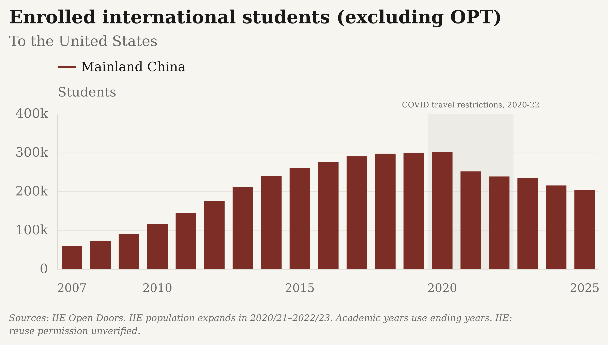
Standalone essay graphics, with titles and sources:
- The Margin of Error: Essay PNG (3000 px wide) · SVG
- Substack: Essay PNG (3000 px wide) · SVG


Hong Kong and Macau
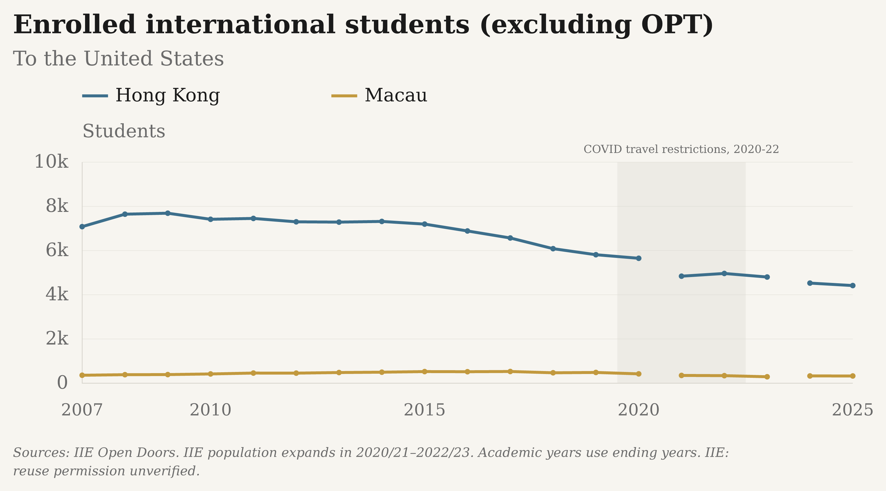
Standalone essay graphics, with titles and sources:
- The Margin of Error: Essay PNG (3000 px wide) · SVG
- Substack: Essay PNG (3000 px wide) · SVG


Logarithmic view — useful when series differ greatly in size
Mainland China
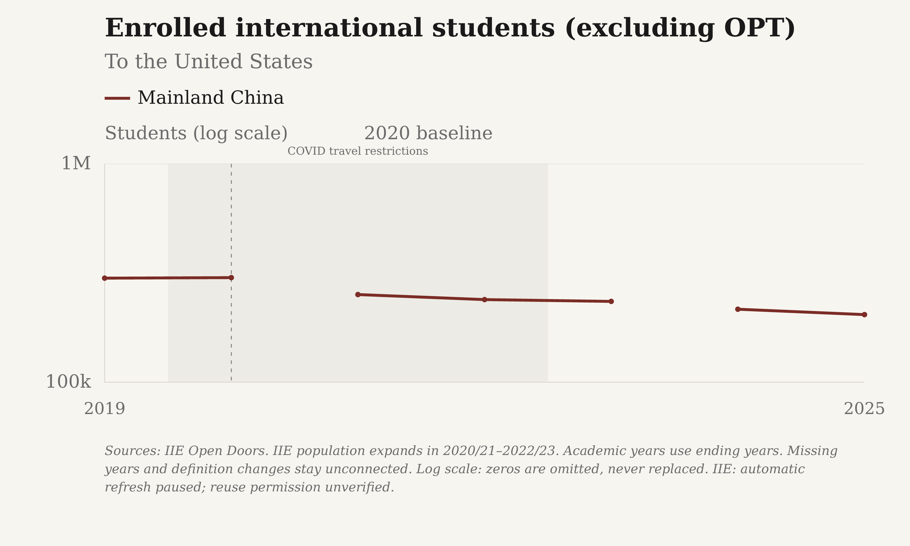
Standalone essay graphics, with titles and sources:
- The Margin of Error: Essay PNG (3000 px wide) · SVG
- Substack: Essay PNG (3000 px wide) · SVG


Hong Kong and Macau
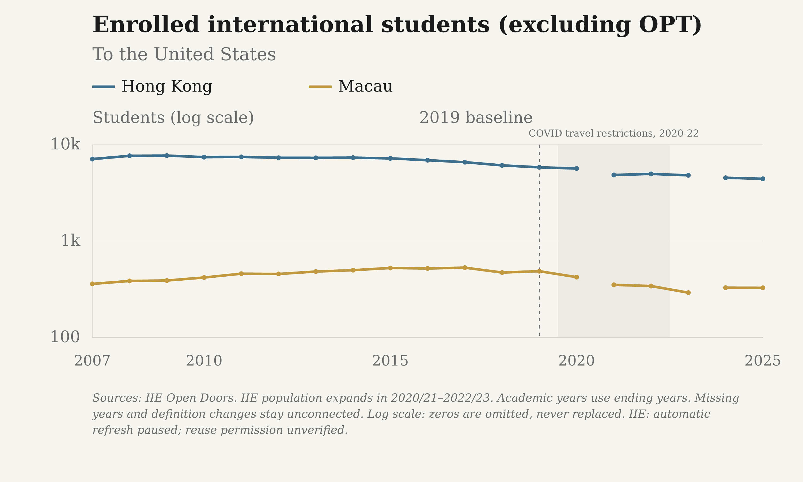
Standalone essay graphics, with titles and sources:
- The Margin of Error: Essay PNG (3000 px wide) · SVG
- Substack: Essay PNG (3000 px wide) · SVG


Exact values, definitions and unavailable series
Mainland China
Source: IIE Open Doors · Open Doors 2025. Latest: 2024/25.
| Period | Value | Status | Population definition |
|---|---|---|---|
| 2006/07 | 60,552 | observed | IIE Open Doors undergraduate + graduate + non-degree enrollment; excludes OPT; not necessarily physically present |
| 2007/08 | 73,409 | observed | IIE Open Doors undergraduate + graduate + non-degree enrollment; excludes OPT; not necessarily physically present |
| 2008/09 | 90,023 | observed | IIE Open Doors undergraduate + graduate + non-degree enrollment; excludes OPT; not necessarily physically present |
| 2009/10 | 116,625 | observed | IIE Open Doors undergraduate + graduate + non-degree enrollment; excludes OPT; not necessarily physically present |
| 2010/11 | 144,290 | observed | IIE Open Doors undergraduate + graduate + non-degree enrollment; excludes OPT; not necessarily physically present |
| 2011/12 | 175,635 | observed | IIE Open Doors undergraduate + graduate + non-degree enrollment; excludes OPT; not necessarily physically present |
| 2012/13 | 211,629 | observed | IIE Open Doors undergraduate + graduate + non-degree enrollment; excludes OPT; not necessarily physically present |
| 2013/14 | 241,038 | observed | IIE Open Doors undergraduate + graduate + non-degree enrollment; excludes OPT; not necessarily physically present |
| 2014/15 | 260,926 | observed | IIE Open Doors undergraduate + graduate + non-degree enrollment; excludes OPT; not necessarily physically present |
| 2015/16 | 276,354 | observed | IIE Open Doors undergraduate + graduate + non-degree enrollment; excludes OPT; not necessarily physically present |
| 2016/17 | 290,920 | observed | IIE Open Doors undergraduate + graduate + non-degree enrollment; excludes OPT; not necessarily physically present |
| 2017/18 | 297,661 | observed | IIE Open Doors undergraduate + graduate + non-degree enrollment; excludes OPT; not necessarily physically present |
| 2018/19 | 299,511 | observed | IIE Open Doors undergraduate + graduate + non-degree enrollment; excludes OPT; not necessarily physically present |
| 2019/20 | 301,152 | observed | IIE Open Doors undergraduate + graduate + non-degree enrollment; excludes OPT; not necessarily physically present |
| 2020/21 | 251,933 | observed | IIE Open Doors undergraduate + graduate + non-degree enrollment; excludes OPT; not necessarily physically present; expanded pandemic census includes coursework from outside the U.S. regardless of visa status |
| 2021/22 | 238,887 | observed | IIE Open Doors undergraduate + graduate + non-degree enrollment; excludes OPT; not necessarily physically present; expanded pandemic census includes coursework from outside the U.S. regardless of visa status |
| 2022/23 | 234,393 | observed | IIE Open Doors undergraduate + graduate + non-degree enrollment; excludes OPT; not necessarily physically present; expanded pandemic census includes coursework from outside the U.S. regardless of visa status |
| 2023/24 | 215,846 | observed | IIE Open Doors undergraduate + graduate + non-degree enrollment; excludes OPT; not necessarily physically present |
| 2024/25 | 203,938 | observed | IIE Open Doors undergraduate + graduate + non-degree enrollment; excludes OPT; not necessarily physically present |
Hong Kong
Source: IIE Open Doors · Open Doors 2025. Latest: 2024/25.
| Period | Value | Status | Population definition |
|---|---|---|---|
| 2006/07 | 7,082 | observed | IIE Open Doors undergraduate + graduate + non-degree enrollment; excludes OPT; not necessarily physically present |
| 2007/08 | 7,646 | observed | IIE Open Doors undergraduate + graduate + non-degree enrollment; excludes OPT; not necessarily physically present |
| 2008/09 | 7,690 | observed | IIE Open Doors undergraduate + graduate + non-degree enrollment; excludes OPT; not necessarily physically present |
| 2009/10 | 7,415 | observed | IIE Open Doors undergraduate + graduate + non-degree enrollment; excludes OPT; not necessarily physically present |
| 2010/11 | 7,454 | observed | IIE Open Doors undergraduate + graduate + non-degree enrollment; excludes OPT; not necessarily physically present |
| 2011/12 | 7,301 | observed | IIE Open Doors undergraduate + graduate + non-degree enrollment; excludes OPT; not necessarily physically present |
| 2012/13 | 7,287 | observed | IIE Open Doors undergraduate + graduate + non-degree enrollment; excludes OPT; not necessarily physically present |
| 2013/14 | 7,318 | observed | IIE Open Doors undergraduate + graduate + non-degree enrollment; excludes OPT; not necessarily physically present |
| 2014/15 | 7,197 | observed | IIE Open Doors undergraduate + graduate + non-degree enrollment; excludes OPT; not necessarily physically present |
| 2015/16 | 6,887 | observed | IIE Open Doors undergraduate + graduate + non-degree enrollment; excludes OPT; not necessarily physically present |
| 2016/17 | 6,569 | observed | IIE Open Doors undergraduate + graduate + non-degree enrollment; excludes OPT; not necessarily physically present |
| 2017/18 | 6,086 | observed | IIE Open Doors undergraduate + graduate + non-degree enrollment; excludes OPT; not necessarily physically present |
| 2018/19 | 5,812 | observed | IIE Open Doors undergraduate + graduate + non-degree enrollment; excludes OPT; not necessarily physically present |
| 2019/20 | 5,651 | observed | IIE Open Doors undergraduate + graduate + non-degree enrollment; excludes OPT; not necessarily physically present |
| 2020/21 | 4,841 | observed | IIE Open Doors undergraduate + graduate + non-degree enrollment; excludes OPT; not necessarily physically present; expanded pandemic census includes coursework from outside the U.S. regardless of visa status |
| 2021/22 | 4,964 | observed | IIE Open Doors undergraduate + graduate + non-degree enrollment; excludes OPT; not necessarily physically present; expanded pandemic census includes coursework from outside the U.S. regardless of visa status |
| 2022/23 | 4,803 | observed | IIE Open Doors undergraduate + graduate + non-degree enrollment; excludes OPT; not necessarily physically present; expanded pandemic census includes coursework from outside the U.S. regardless of visa status |
| 2023/24 | 4,528 | observed | IIE Open Doors undergraduate + graduate + non-degree enrollment; excludes OPT; not necessarily physically present |
| 2024/25 | 4,417 | observed | IIE Open Doors undergraduate + graduate + non-degree enrollment; excludes OPT; not necessarily physically present |
Macau
Source: IIE Open Doors · Open Doors 2025. Latest: 2024/25.
| Period | Value | Status | Population definition |
|---|---|---|---|
| 2006/07 | 359 | observed | IIE Open Doors undergraduate + graduate + non-degree enrollment; excludes OPT; not necessarily physically present |
| 2007/08 | 385 | observed | IIE Open Doors undergraduate + graduate + non-degree enrollment; excludes OPT; not necessarily physically present |
| 2008/09 | 389 | observed | IIE Open Doors undergraduate + graduate + non-degree enrollment; excludes OPT; not necessarily physically present |
| 2009/10 | 418 | observed | IIE Open Doors undergraduate + graduate + non-degree enrollment; excludes OPT; not necessarily physically present |
| 2010/11 | 458 | observed | IIE Open Doors undergraduate + graduate + non-degree enrollment; excludes OPT; not necessarily physically present |
| 2011/12 | 455 | observed | IIE Open Doors undergraduate + graduate + non-degree enrollment; excludes OPT; not necessarily physically present |
| 2012/13 | 482 | observed | IIE Open Doors undergraduate + graduate + non-degree enrollment; excludes OPT; not necessarily physically present |
| 2013/14 | 498 | observed | IIE Open Doors undergraduate + graduate + non-degree enrollment; excludes OPT; not necessarily physically present |
| 2014/15 | 525 | observed | IIE Open Doors undergraduate + graduate + non-degree enrollment; excludes OPT; not necessarily physically present |
| 2015/16 | 519 | observed | IIE Open Doors undergraduate + graduate + non-degree enrollment; excludes OPT; not necessarily physically present |
| 2016/17 | 529 | observed | IIE Open Doors undergraduate + graduate + non-degree enrollment; excludes OPT; not necessarily physically present |
| 2017/18 | 471 | observed | IIE Open Doors undergraduate + graduate + non-degree enrollment; excludes OPT; not necessarily physically present |
| 2018/19 | 486 | observed | IIE Open Doors undergraduate + graduate + non-degree enrollment; excludes OPT; not necessarily physically present |
| 2019/20 | 422 | observed | IIE Open Doors undergraduate + graduate + non-degree enrollment; excludes OPT; not necessarily physically present |
| 2020/21 | 351 | observed | IIE Open Doors undergraduate + graduate + non-degree enrollment; excludes OPT; not necessarily physically present; expanded pandemic census includes coursework from outside the U.S. regardless of visa status |
| 2021/22 | 341 | observed | IIE Open Doors undergraduate + graduate + non-degree enrollment; excludes OPT; not necessarily physically present; expanded pandemic census includes coursework from outside the U.S. regardless of visa status |
| 2022/23 | 291 | observed | IIE Open Doors undergraduate + graduate + non-degree enrollment; excludes OPT; not necessarily physically present; expanded pandemic census includes coursework from outside the U.S. regardless of visa status |
| 2023/24 | 328 | observed | IIE Open Doors undergraduate + graduate + non-degree enrollment; excludes OPT; not necessarily physically present |
| 2024/25 | 327 | observed | IIE Open Doors undergraduate + graduate + non-degree enrollment; excludes OPT; not necessarily physically present |
Enrolled international students (excluding OPT) · From the United States
Same year range; separate vertical scales.
Mainland China
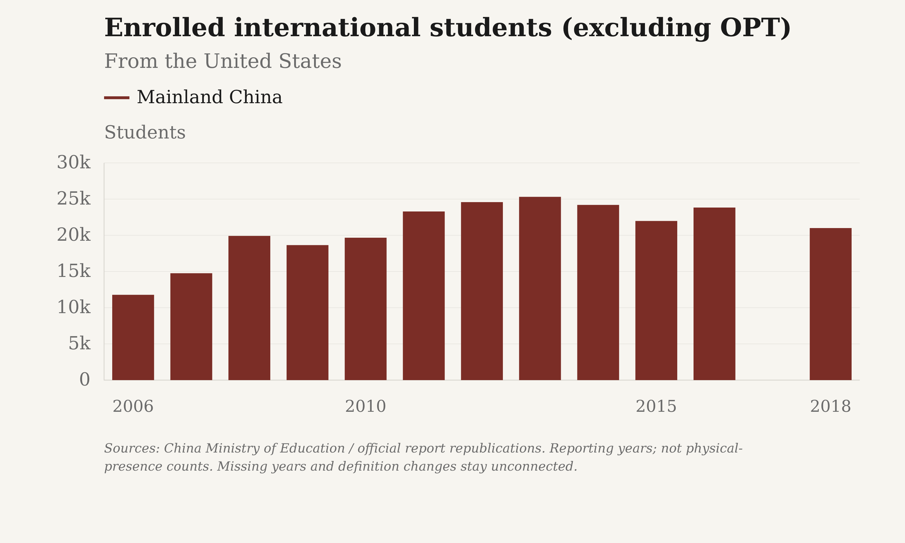
Standalone essay graphics, with titles and sources:
- The Margin of Error: Essay PNG (3000 px wide) · SVG
- Substack: Essay PNG (3000 px wide) · SVG


Hong Kong and Macau
No verified annual observations for Hong Kong and Macau.
Logarithmic view — useful when series differ greatly in size
Mainland China
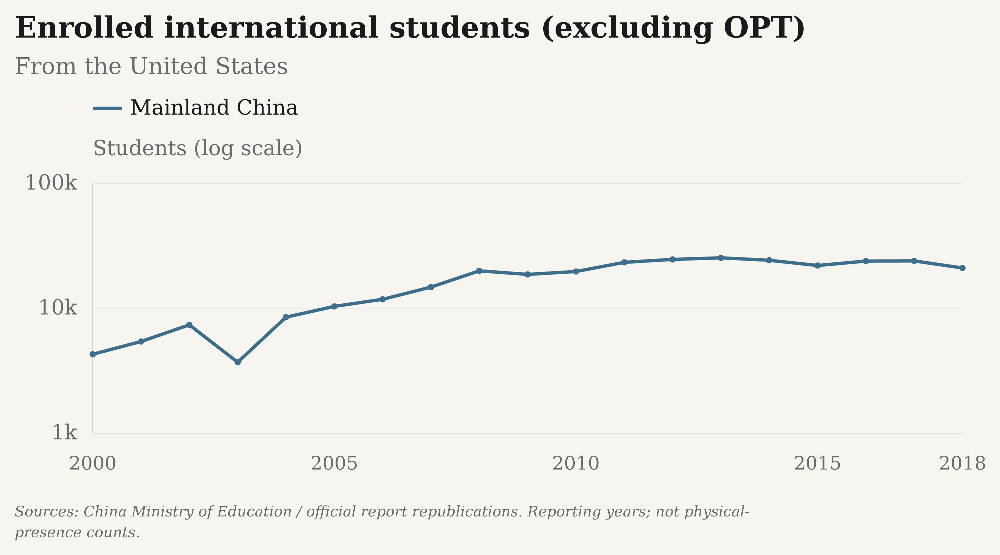
Standalone essay graphics, with titles and sources:
- The Margin of Error: Essay PNG (3000 px wide) · SVG
- Substack: Essay PNG (3000 px wide) · SVG


Hong Kong and Macau
No verified annual observations for Hong Kong and Macau.
Exact values, definitions and unavailable series
Mainland China
Source: China Ministry of Education / official report republications · MOE 2018 international-student report; reviewed government/briefing republication. Latest: 2018.
| Period | Value | Status |
|---|---|---|
| 2000 | 4,280 | observed |
| 2001 | 5,413 | observed |
| 2002 | 7,359 | observed |
| 2003 | 3,693 | observed |
| 2004 | 8,480 | observed |
| 2005 | 10,343 | observed |
| 2006 | 11,784 | observed |
| 2007 | 14,758 | observed |
| 2008 | 19,914 | observed |
| 2009 | 18,650 | observed |
| 2010 | 19,668 | observed |
| 2011 | 23,292 | observed |
| 2012 | 24,583 | observed |
| 2013 | 25,312 | observed |
| 2014 | 24,203 | observed |
| 2015 | 21,975 | observed |
| 2016 | 23,838 | observed |
| 2017 | 23,911 | observed |
| 2018 | 20,996 | observed |
Hong Kong
IIE enrolled-only counts cover U.S. hosts. MOE historical degree/non-degree reporting snapshots cover the mainland destination only; equivalent enrollment counts for this route remain unverified.
Macau
IIE enrolled-only counts cover U.S. hosts. MOE historical degree/non-degree reporting snapshots cover the mainland destination only; equivalent enrollment counts for this route remain unverified.
Degree enrollment · To the United States
Same year range; separate vertical scales.
Mainland China
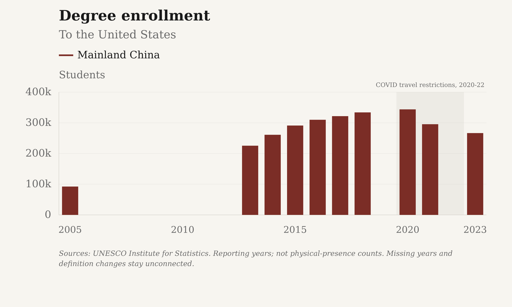
Standalone essay graphics, with titles and sources:
- The Margin of Error: Essay PNG (3000 px wide) · SVG
- Substack: Essay PNG (3000 px wide) · SVG


Hong Kong and Macau
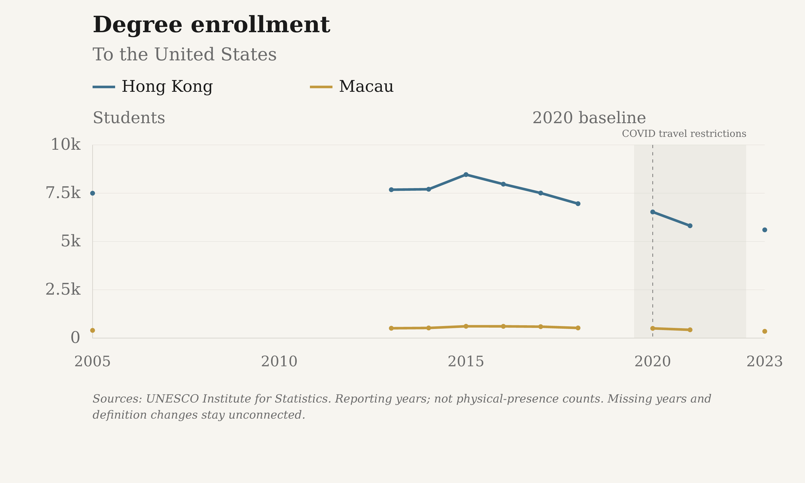
Standalone essay graphics, with titles and sources:
- The Margin of Error: Essay PNG (3000 px wide) · SVG
- Substack: Essay PNG (3000 px wide) · SVG


Logarithmic view — useful when series differ greatly in size
Mainland China
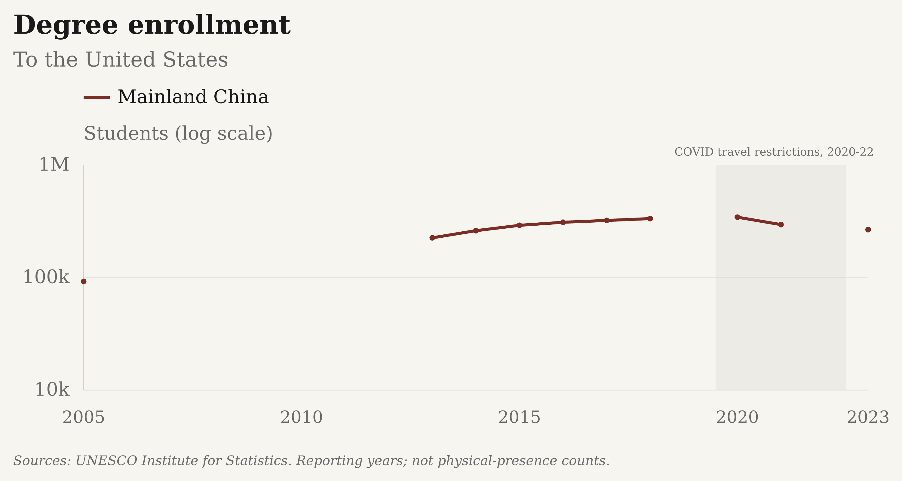
Standalone essay graphics, with titles and sources:
- The Margin of Error: Essay PNG (3000 px wide) · SVG
- Substack: Essay PNG (3000 px wide) · SVG


Hong Kong and Macau
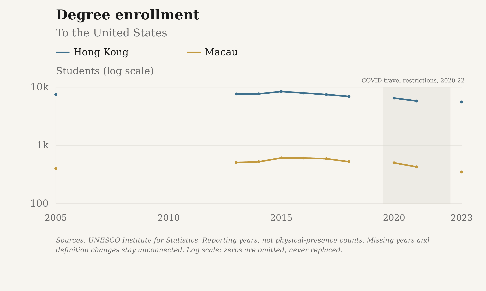
Standalone essay graphics, with titles and sources:
- The Margin of Error: Essay PNG (3000 px wide) · SVG
- Substack: Essay PNG (3000 px wide) · SVG


Exact values, definitions and unavailable series
Mainland China
Source: UNESCO Institute for Statistics · February 2026 Data Release. Latest: 2023.
| Period | Value | Status |
|---|---|---|
| 2005 | 92,370 | observed |
| 2013 | 225,474.28125 | observed |
| 2014 | 260,914 | observed |
| 2015 | 291,063.5 | observed |
| 2016 | 309,837.34375 | observed |
| 2017 | 321,624.8125 | observed |
| 2018 | 333,935.21875 | observed |
| 2020 | 343,761.03125 | observed |
| 2021 | 295,398.28125 | observed |
| 2023 | 266,587.03125 | observed |
Hong Kong
Source: UNESCO Institute for Statistics · February 2026 Data Release. Latest: 2023.
| Period | Value | Status |
|---|---|---|
| 2005 | 7,499 | observed |
| 2013 | 7,681.1533203125 | observed |
| 2014 | 7,705 | observed |
| 2015 | 8,463.1826171875 | observed |
| 2016 | 7,967.83154296875 | observed |
| 2017 | 7,508.01416015625 | observed |
| 2018 | 6,957.5029296875 | observed |
| 2020 | 6,529.908203125 | observed |
| 2021 | 5,815.2822265625 | observed |
| 2023 | 5,602.76953125 | observed |
Macau
Source: UNESCO Institute for Statistics · February 2026 Data Release. Latest: 2023.
| Period | Value | Status |
|---|---|---|
| 2005 | 400 | observed |
| 2013 | 510.0989990234375 | observed |
| 2014 | 525 | observed |
| 2015 | 612.195068359375 | observed |
| 2016 | 608.7916259765625 | observed |
| 2017 | 592.0806274414062 | observed |
| 2018 | 525.9071044921875 | observed |
| 2020 | 503.5499267578125 | observed |
| 2021 | 429.1065979003906 | observed |
| 2023 | 351.1990356445313 | observed |
Degree enrollment · From the United States
Same year range; separate vertical scales.
Mainland China
No verified annual observations for Mainland China.
Hong Kong and Macau
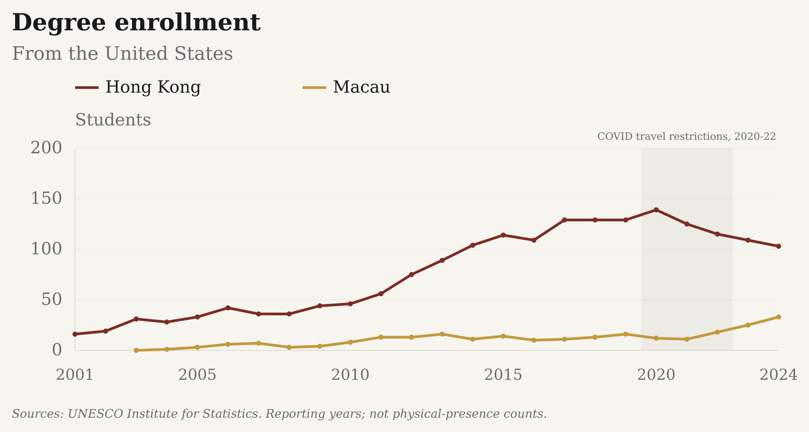
Standalone essay graphics, with titles and sources:
- The Margin of Error: Essay PNG (3000 px wide) · SVG
- Substack: Essay PNG (3000 px wide) · SVG


Logarithmic view — useful when series differ greatly in size
Mainland China
No verified annual observations for Mainland China.
Hong Kong and Macau
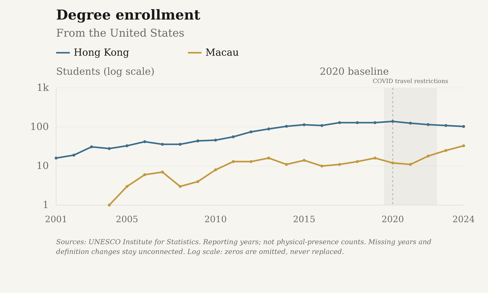
Standalone essay graphics, with titles and sources:
- The Margin of Error: Essay PNG (3000 px wide) · SVG
- Substack: Essay PNG (3000 px wide) · SVG


Exact values, definitions and unavailable series
Mainland China
UIS bilateral origin/destination request returned no records; no compatible destination degree-enrollment series verified.
Hong Kong
Source: UNESCO Institute for Statistics · February 2026 Data Release. Latest: 2024.
| Period | Value | Status |
|---|---|---|
| 2001 | 16 | observed |
| 2002 | 19 | observed |
| 2003 | 31 | observed |
| 2004 | 28 | observed |
| 2005 | 33 | observed |
| 2006 | 42 | observed |
| 2007 | 36 | observed |
| 2008 | 36 | observed |
| 2009 | 44 | observed |
| 2010 | 46 | observed |
| 2011 | 56 | observed |
| 2012 | 75 | observed |
| 2013 | 89 | observed |
| 2014 | 104 | observed |
| 2015 | 114 | observed |
| 2016 | 109 | observed |
| 2017 | 129 | observed |
| 2018 | 129.0079956054688 | observed |
| 2019 | 129 | observed |
| 2020 | 139 | observed |
| 2021 | 125 | observed |
| 2022 | 115 | observed |
| 2023 | 109 | observed |
| 2024 | 103 | observed |
Macau
Source: UNESCO Institute for Statistics · February 2026 Data Release. Latest: 2024.
| Period | Value | Status |
|---|---|---|
| 2003 | 0 | observed |
| 2004 | 1 | observed |
| 2005 | 3 | observed |
| 2006 | 6 | observed |
| 2007 | 7 | observed |
| 2008 | 3 | observed |
| 2009 | 4 | observed |
| 2010 | 8 | observed |
| 2011 | 13 | observed |
| 2012 | 13 | observed |
| 2013 | 16 | observed |
| 2014 | 11 | observed |
| 2015 | 14 | observed |
| 2016 | 10 | observed |
| 2017 | 11 | observed |
| 2018 | 13 | observed |
| 2019 | 16 | observed |
| 2020 | 12 | observed |
| 2021 | 11 | observed |
| 2022 | 18 | observed |
| 2023 | 25 | observed |
| 2024 | 33 | observed |
Historical reported student totals (coverage qualified) · To the United States
Same year range; separate vertical scales.
Mainland China
No verified annual observations for Mainland China.
Hong Kong and Macau
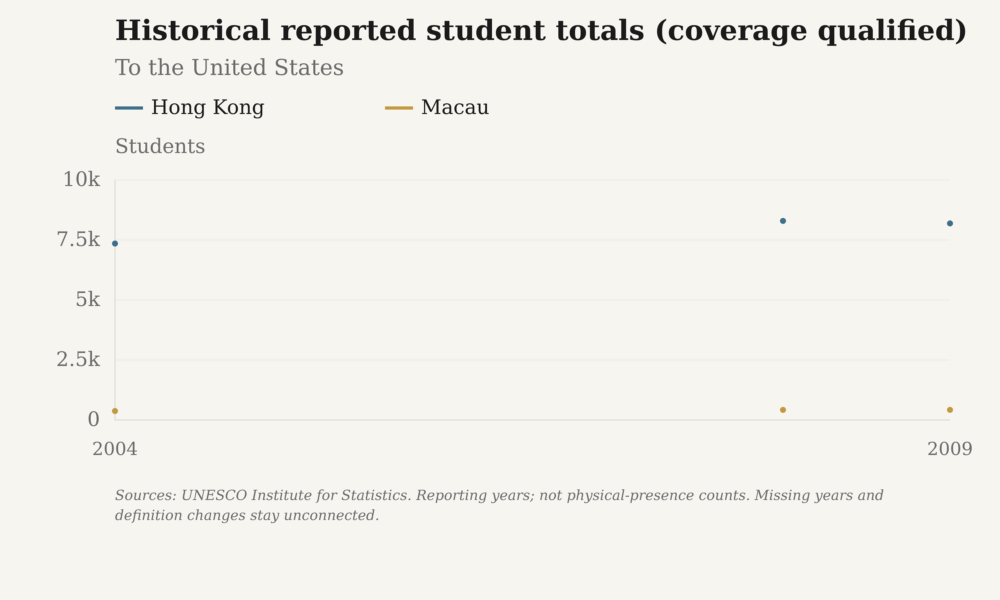
Standalone essay graphics, with titles and sources:
- The Margin of Error: Essay PNG (3000 px wide) · SVG
- Substack: Essay PNG (3000 px wide) · SVG


Logarithmic view — useful when series differ greatly in size
Mainland China
No verified annual observations for Mainland China.
Hong Kong and Macau
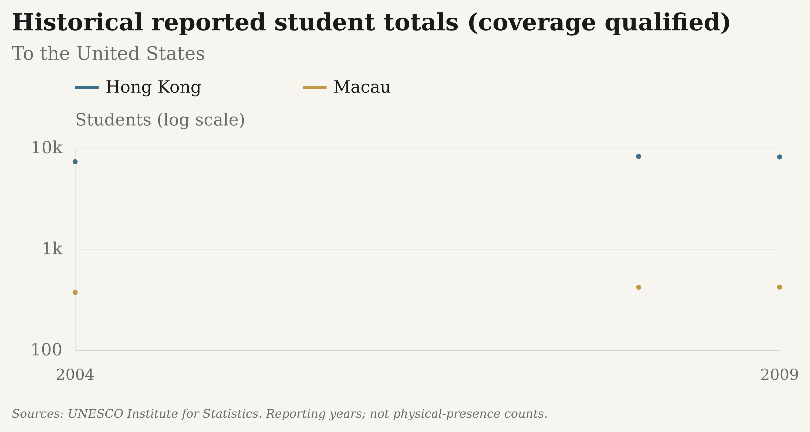
Standalone essay graphics, with titles and sources:
- The Margin of Error: Essay PNG (3000 px wide) · SVG
- Substack: Essay PNG (3000 px wide) · SVG


Exact values, definitions and unavailable series
Mainland China
No reviewed legacy UIS total for this route. Historical degree-seeking, non-degree and OPT coverage is unresolved; these facts are not a substitute for modern enrollment or OPT series.
Hong Kong
Source: UNESCO Institute for Statistics · UNESCO Global Education Digest 2011, table 12, PDF page 203; reporting year 2009. Latest: 2009.
| Period | Value | Status | Population definition |
|---|---|---|---|
| 2004 | 7,353 | observed | Historical UIS reported tertiary student totals; degree-seeking status and non-degree/OPT coverage are not independently verified |
| 2008 | 8,295 | observed | Historical UIS reported tertiary student totals; degree-seeking status and non-degree/OPT coverage are not independently verified |
| 2009 | 8,192 | observed | Historical UIS reported tertiary student totals; degree-seeking status and non-degree/OPT coverage are not independently verified |
Macau
Source: UNESCO Institute for Statistics · UNESCO Global Education Digest 2011, table 12, PDF page 203; reporting year 2009. Latest: 2009.
| Period | Value | Status | Population definition |
|---|---|---|---|
| 2004 | 374 | observed | Historical UIS reported tertiary student totals; degree-seeking status and non-degree/OPT coverage are not independently verified |
| 2008 | 421 | observed | Historical UIS reported tertiary student totals; degree-seeking status and non-degree/OPT coverage are not independently verified |
| 2009 | 422 | observed | Historical UIS reported tertiary student totals; degree-seeking status and non-degree/OPT coverage are not independently verified |
Historical reported student totals (coverage qualified) · From the United States
No verified annual series for these geographies in this direction. Missing is not zero.
Exact values, definitions and unavailable series
Mainland China
No reviewed legacy UIS total for this route. Historical degree-seeking, non-degree and OPT coverage is unresolved; these facts are not a substitute for modern enrollment or OPT series.
Hong Kong
No reviewed legacy UIS total for this route. Historical degree-seeking, non-degree and OPT coverage is unresolved; these facts are not a substitute for modern enrollment or OPT series.
Macau
No reviewed legacy UIS total for this route. Historical degree-seeking, non-degree and OPT coverage is unresolved; these facts are not a substitute for modern enrollment or OPT series.
International students, including OPT · To the United States
Same year range; separate vertical scales.
Mainland China
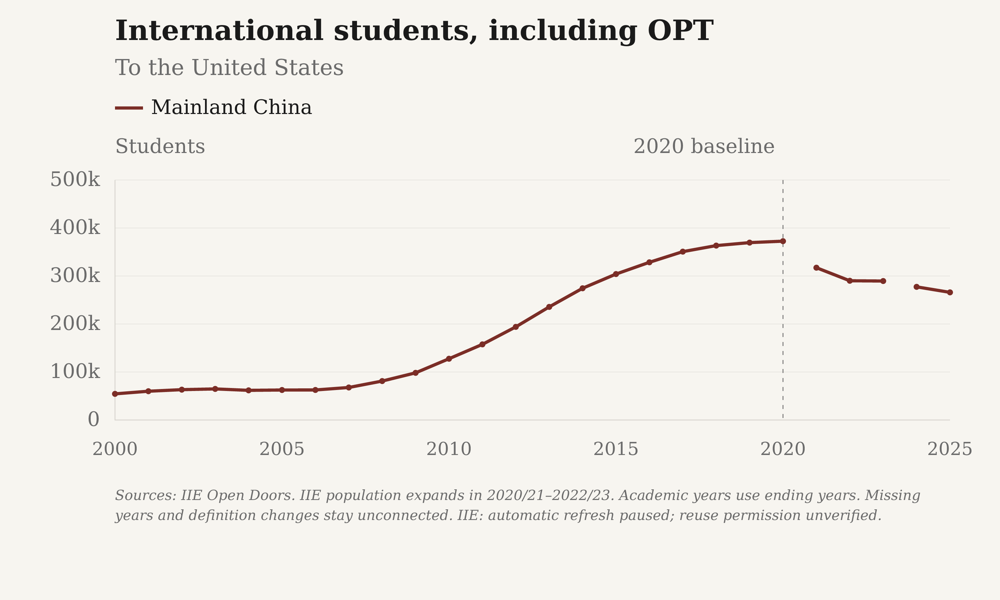
Standalone essay graphics, with titles and sources:
- The Margin of Error: Essay PNG (3000 px wide) · SVG
- Substack: Essay PNG (3000 px wide) · SVG


Hong Kong and Macau
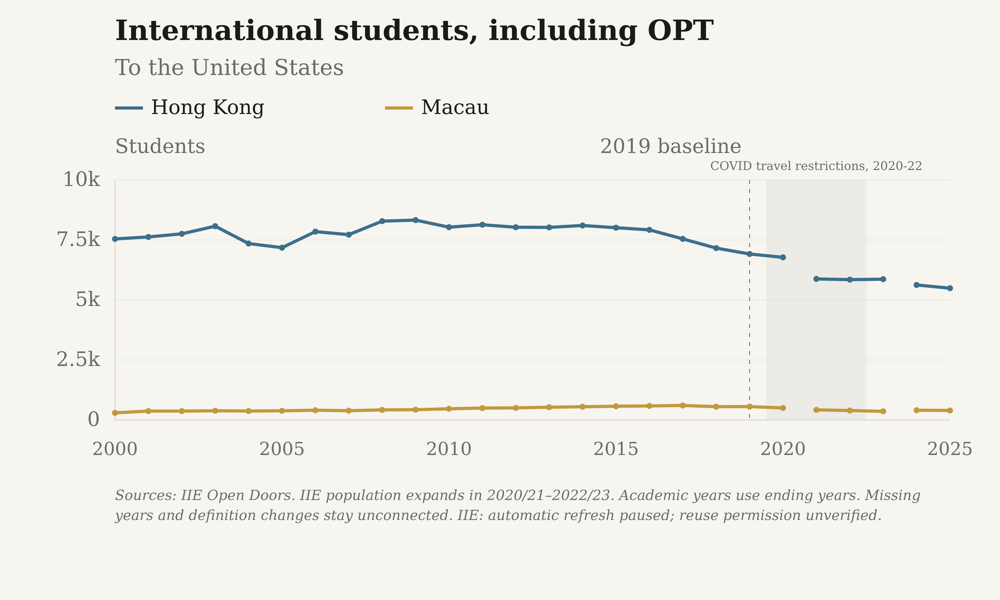
Standalone essay graphics, with titles and sources:
- The Margin of Error: Essay PNG (3000 px wide) · SVG
- Substack: Essay PNG (3000 px wide) · SVG


Logarithmic view — useful when series differ greatly in size
Mainland China
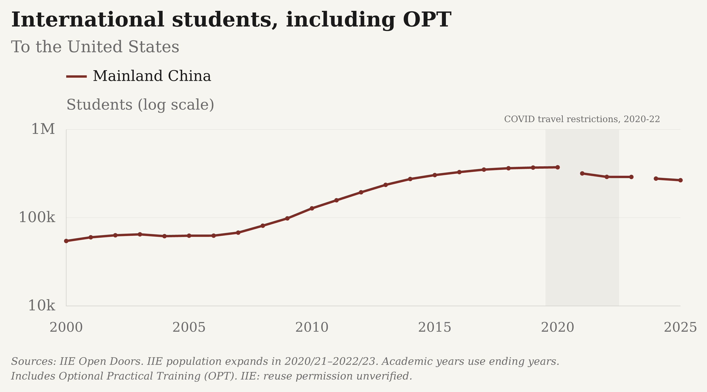
Standalone essay graphics, with titles and sources:
- The Margin of Error: Essay PNG (3000 px wide) · SVG
- Substack: Essay PNG (3000 px wide) · SVG


Hong Kong and Macau
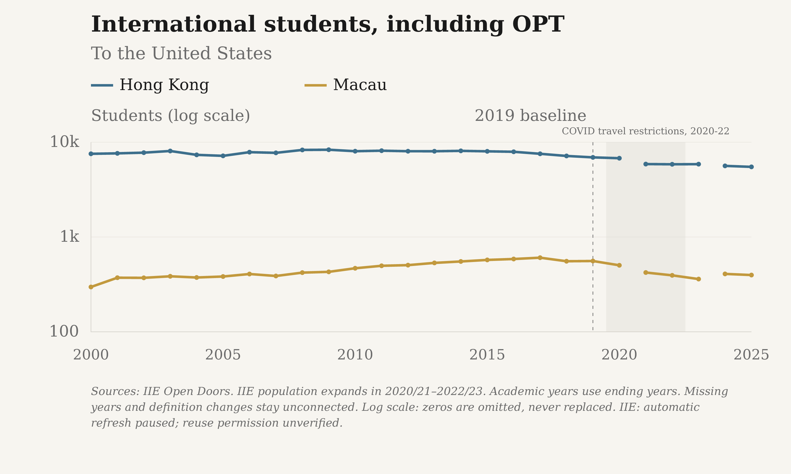
Standalone essay graphics, with titles and sources:
- The Margin of Error: Essay PNG (3000 px wide) · SVG
- Substack: Essay PNG (3000 px wide) · SVG


Exact values, definitions and unavailable series
Mainland China
Source: IIE Open Doors · Open Doors 2025. Latest: 2024/25.
| Period | Value | Status | Population definition |
|---|---|---|---|
| 1999/00 | 54,466 | observed | IIE Open Doors international students, including Optional Practical Training (OPT); standard temporary-visa population; excludes students enrolled online from outside the U.S. |
| 2000/01 | 59,939 | observed | IIE Open Doors international students, including Optional Practical Training (OPT); standard temporary-visa population; excludes students enrolled online from outside the U.S. |
| 2001/02 | 63,211 | observed | IIE Open Doors international students, including Optional Practical Training (OPT); standard temporary-visa population; excludes students enrolled online from outside the U.S. |
| 2002/03 | 64,757 | observed | IIE Open Doors international students, including Optional Practical Training (OPT); standard temporary-visa population; excludes students enrolled online from outside the U.S. |
| 2003/04 | 61,765 | observed | IIE Open Doors international students, including Optional Practical Training (OPT); standard temporary-visa population; excludes students enrolled online from outside the U.S. |
| 2004/05 | 62,523 | observed | IIE Open Doors international students, including Optional Practical Training (OPT); standard temporary-visa population; excludes students enrolled online from outside the U.S. |
| 2005/06 | 62,582 | observed | IIE Open Doors international students, including Optional Practical Training (OPT); standard temporary-visa population; excludes students enrolled online from outside the U.S. |
| 2006/07 | 67,723 | observed | IIE Open Doors international students, including Optional Practical Training (OPT); standard temporary-visa population; excludes students enrolled online from outside the U.S. |
| 2007/08 | 81,127 | observed | IIE Open Doors international students, including Optional Practical Training (OPT); standard temporary-visa population; excludes students enrolled online from outside the U.S. |
| 2008/09 | 98,235 | observed | IIE Open Doors international students, including Optional Practical Training (OPT); standard temporary-visa population; excludes students enrolled online from outside the U.S. |
| 2009/10 | 127,628 | observed | IIE Open Doors international students, including Optional Practical Training (OPT); standard temporary-visa population; excludes students enrolled online from outside the U.S. |
| 2010/11 | 157,558 | observed | IIE Open Doors international students, including Optional Practical Training (OPT); standard temporary-visa population; excludes students enrolled online from outside the U.S. |
| 2011/12 | 194,029 | observed | IIE Open Doors international students, including Optional Practical Training (OPT); standard temporary-visa population; excludes students enrolled online from outside the U.S. |
| 2012/13 | 235,597 | observed | IIE Open Doors international students, including Optional Practical Training (OPT); standard temporary-visa population; excludes students enrolled online from outside the U.S. |
| 2013/14 | 274,439 | observed | IIE Open Doors international students, including Optional Practical Training (OPT); standard temporary-visa population; excludes students enrolled online from outside the U.S. |
| 2014/15 | 304,040 | observed | IIE Open Doors international students, including Optional Practical Training (OPT); standard temporary-visa population; excludes students enrolled online from outside the U.S. |
| 2015/16 | 328,547 | observed | IIE Open Doors international students, including Optional Practical Training (OPT); standard temporary-visa population; excludes students enrolled online from outside the U.S. |
| 2016/17 | 350,755 | observed | IIE Open Doors international students, including Optional Practical Training (OPT); standard temporary-visa population; excludes students enrolled online from outside the U.S. |
| 2017/18 | 363,341 | observed | IIE Open Doors international students, including Optional Practical Training (OPT); standard temporary-visa population; excludes students enrolled online from outside the U.S. |
| 2018/19 | 369,548 | observed | IIE Open Doors international students, including Optional Practical Training (OPT); standard temporary-visa population; excludes students enrolled online from outside the U.S. |
| 2019/20 | 372,532 | observed | IIE Open Doors international students, including Optional Practical Training (OPT); standard temporary-visa population; excludes students enrolled online from outside the U.S. |
| 2020/21 | 317,299 | observed | IIE Open Doors international students, including Optional Practical Training (OPT); expanded pandemic population includes coursework from outside the U.S. regardless of visa status |
| 2021/22 | 290,086 | observed | IIE Open Doors international students, including Optional Practical Training (OPT); expanded pandemic population includes coursework from outside the U.S. regardless of visa status |
| 2022/23 | 289,526 | observed | IIE Open Doors international students, including Optional Practical Training (OPT); expanded pandemic population includes coursework from outside the U.S. regardless of visa status |
| 2023/24 | 277,398 | observed | IIE Open Doors international students, including Optional Practical Training (OPT); standard temporary-visa population; excludes students enrolled online from outside the U.S. |
| 2024/25 | 265,919 | observed | IIE Open Doors international students, including Optional Practical Training (OPT); standard temporary-visa population; excludes students enrolled online from outside the U.S. |
Hong Kong
Source: IIE Open Doors · Open Doors 2025. Latest: 2024/25.
| Period | Value | Status | Population definition |
|---|---|---|---|
| 1999/00 | 7,545 | observed | IIE Open Doors international students, including Optional Practical Training (OPT); standard temporary-visa population; excludes students enrolled online from outside the U.S. |
| 2000/01 | 7,627 | observed | IIE Open Doors international students, including Optional Practical Training (OPT); standard temporary-visa population; excludes students enrolled online from outside the U.S. |
| 2001/02 | 7,757 | observed | IIE Open Doors international students, including Optional Practical Training (OPT); standard temporary-visa population; excludes students enrolled online from outside the U.S. |
| 2002/03 | 8,076 | observed | IIE Open Doors international students, including Optional Practical Training (OPT); standard temporary-visa population; excludes students enrolled online from outside the U.S. |
| 2003/04 | 7,353 | observed | IIE Open Doors international students, including Optional Practical Training (OPT); standard temporary-visa population; excludes students enrolled online from outside the U.S. |
| 2004/05 | 7,180 | observed | IIE Open Doors international students, including Optional Practical Training (OPT); standard temporary-visa population; excludes students enrolled online from outside the U.S. |
| 2005/06 | 7,849 | observed | IIE Open Doors international students, including Optional Practical Training (OPT); standard temporary-visa population; excludes students enrolled online from outside the U.S. |
| 2006/07 | 7,722 | observed | IIE Open Doors international students, including Optional Practical Training (OPT); standard temporary-visa population; excludes students enrolled online from outside the U.S. |
| 2007/08 | 8,286 | observed | IIE Open Doors international students, including Optional Practical Training (OPT); standard temporary-visa population; excludes students enrolled online from outside the U.S. |
| 2008/09 | 8,329 | observed | IIE Open Doors international students, including Optional Practical Training (OPT); standard temporary-visa population; excludes students enrolled online from outside the U.S. |
| 2009/10 | 8,034 | observed | IIE Open Doors international students, including Optional Practical Training (OPT); standard temporary-visa population; excludes students enrolled online from outside the U.S. |
| 2010/11 | 8,136 | observed | IIE Open Doors international students, including Optional Practical Training (OPT); standard temporary-visa population; excludes students enrolled online from outside the U.S. |
| 2011/12 | 8,032 | observed | IIE Open Doors international students, including Optional Practical Training (OPT); standard temporary-visa population; excludes students enrolled online from outside the U.S. |
| 2012/13 | 8,026 | observed | IIE Open Doors international students, including Optional Practical Training (OPT); standard temporary-visa population; excludes students enrolled online from outside the U.S. |
| 2013/14 | 8,104 | observed | IIE Open Doors international students, including Optional Practical Training (OPT); standard temporary-visa population; excludes students enrolled online from outside the U.S. |
| 2014/15 | 8,012 | observed | IIE Open Doors international students, including Optional Practical Training (OPT); standard temporary-visa population; excludes students enrolled online from outside the U.S. |
| 2015/16 | 7,923 | observed | IIE Open Doors international students, including Optional Practical Training (OPT); standard temporary-visa population; excludes students enrolled online from outside the U.S. |
| 2016/17 | 7,547 | observed | IIE Open Doors international students, including Optional Practical Training (OPT); standard temporary-visa population; excludes students enrolled online from outside the U.S. |
| 2017/18 | 7,162 | observed | IIE Open Doors international students, including Optional Practical Training (OPT); standard temporary-visa population; excludes students enrolled online from outside the U.S. |
| 2018/19 | 6,917 | observed | IIE Open Doors international students, including Optional Practical Training (OPT); standard temporary-visa population; excludes students enrolled online from outside the U.S. |
| 2019/20 | 6,778 | observed | IIE Open Doors international students, including Optional Practical Training (OPT); standard temporary-visa population; excludes students enrolled online from outside the U.S. |
| 2020/21 | 5,878 | observed | IIE Open Doors international students, including Optional Practical Training (OPT); expanded pandemic population includes coursework from outside the U.S. regardless of visa status |
| 2021/22 | 5,848 | observed | IIE Open Doors international students, including Optional Practical Training (OPT); expanded pandemic population includes coursework from outside the U.S. regardless of visa status |
| 2022/23 | 5,867 | observed | IIE Open Doors international students, including Optional Practical Training (OPT); expanded pandemic population includes coursework from outside the U.S. regardless of visa status |
| 2023/24 | 5,627 | observed | IIE Open Doors international students, including Optional Practical Training (OPT); standard temporary-visa population; excludes students enrolled online from outside the U.S. |
| 2024/25 | 5,492 | observed | IIE Open Doors international students, including Optional Practical Training (OPT); standard temporary-visa population; excludes students enrolled online from outside the U.S. |
Macau
Source: IIE Open Doors · Open Doors 2025. Latest: 2024/25.
| Period | Value | Status | Population definition |
|---|---|---|---|
| 1999/00 | 297 | observed | IIE Open Doors international students, including Optional Practical Training (OPT); standard temporary-visa population; excludes students enrolled online from outside the U.S. |
| 2000/01 | 372 | observed | IIE Open Doors international students, including Optional Practical Training (OPT); standard temporary-visa population; excludes students enrolled online from outside the U.S. |
| 2001/02 | 371 | observed | IIE Open Doors international students, including Optional Practical Training (OPT); standard temporary-visa population; excludes students enrolled online from outside the U.S. |
| 2002/03 | 385 | observed | IIE Open Doors international students, including Optional Practical Training (OPT); standard temporary-visa population; excludes students enrolled online from outside the U.S. |
| 2003/04 | 374 | observed | IIE Open Doors international students, including Optional Practical Training (OPT); standard temporary-visa population; excludes students enrolled online from outside the U.S. |
| 2004/05 | 383 | observed | IIE Open Doors international students, including Optional Practical Training (OPT); standard temporary-visa population; excludes students enrolled online from outside the U.S. |
| 2005/06 | 407 | observed | IIE Open Doors international students, including Optional Practical Training (OPT); standard temporary-visa population; excludes students enrolled online from outside the U.S. |
| 2006/07 | 388 | observed | IIE Open Doors international students, including Optional Practical Training (OPT); standard temporary-visa population; excludes students enrolled online from outside the U.S. |
| 2007/08 | 421 | observed | IIE Open Doors international students, including Optional Practical Training (OPT); standard temporary-visa population; excludes students enrolled online from outside the U.S. |
| 2008/09 | 429 | observed | IIE Open Doors international students, including Optional Practical Training (OPT); standard temporary-visa population; excludes students enrolled online from outside the U.S. |
| 2009/10 | 468 | observed | IIE Open Doors international students, including Optional Practical Training (OPT); standard temporary-visa population; excludes students enrolled online from outside the U.S. |
| 2010/11 | 497 | observed | IIE Open Doors international students, including Optional Practical Training (OPT); standard temporary-visa population; excludes students enrolled online from outside the U.S. |
| 2011/12 | 505 | observed | IIE Open Doors international students, including Optional Practical Training (OPT); standard temporary-visa population; excludes students enrolled online from outside the U.S. |
| 2012/13 | 533 | observed | IIE Open Doors international students, including Optional Practical Training (OPT); standard temporary-visa population; excludes students enrolled online from outside the U.S. |
| 2013/14 | 552 | observed | IIE Open Doors international students, including Optional Practical Training (OPT); standard temporary-visa population; excludes students enrolled online from outside the U.S. |
| 2014/15 | 573 | observed | IIE Open Doors international students, including Optional Practical Training (OPT); standard temporary-visa population; excludes students enrolled online from outside the U.S. |
| 2015/16 | 586 | observed | IIE Open Doors international students, including Optional Practical Training (OPT); standard temporary-visa population; excludes students enrolled online from outside the U.S. |
| 2016/17 | 605 | observed | IIE Open Doors international students, including Optional Practical Training (OPT); standard temporary-visa population; excludes students enrolled online from outside the U.S. |
| 2017/18 | 555 | observed | IIE Open Doors international students, including Optional Practical Training (OPT); standard temporary-visa population; excludes students enrolled online from outside the U.S. |
| 2018/19 | 558 | observed | IIE Open Doors international students, including Optional Practical Training (OPT); standard temporary-visa population; excludes students enrolled online from outside the U.S. |
| 2019/20 | 503 | observed | IIE Open Doors international students, including Optional Practical Training (OPT); standard temporary-visa population; excludes students enrolled online from outside the U.S. |
| 2020/21 | 422 | observed | IIE Open Doors international students, including Optional Practical Training (OPT); expanded pandemic population includes coursework from outside the U.S. regardless of visa status |
| 2021/22 | 394 | observed | IIE Open Doors international students, including Optional Practical Training (OPT); expanded pandemic population includes coursework from outside the U.S. regardless of visa status |
| 2022/23 | 360 | observed | IIE Open Doors international students, including Optional Practical Training (OPT); expanded pandemic population includes coursework from outside the U.S. regardless of visa status |
| 2023/24 | 408 | observed | IIE Open Doors international students, including Optional Practical Training (OPT); standard temporary-visa population; excludes students enrolled online from outside the U.S. |
| 2024/25 | 397 | observed | IIE Open Doors international students, including Optional Practical Training (OPT); standard temporary-visa population; excludes students enrolled online from outside the U.S. |
International students, including OPT · From the United States
No verified annual series for these geographies in this direction. Missing is not zero.
Exact values, definitions and unavailable series
Mainland China
OPT-inclusive IIE totals describe students hosted in the U.S.; not an outbound U.S. enrollment measure.
Hong Kong
OPT-inclusive IIE totals describe students hosted in the U.S.; not an outbound U.S. enrollment measure.
Macau
OPT-inclusive IIE totals describe students hosted in the U.S.; not an outbound U.S. enrollment measure.
U.S. college students studying abroad
No verified annual series for these geographies in this direction. Missing is not zero.
Exact values, definitions and unavailable series
Mainland China
IIE credit-study-abroad statistics cover U.S.-origin participants only; reverse-direction participation is not reported here.
Hong Kong
IIE credit-study-abroad statistics cover U.S.-origin participants only; reverse-direction participation is not reported here.
Macau
IIE credit-study-abroad statistics cover U.S.-origin participants only; reverse-direction participation is not reported here.
U.S. college students studying abroad
Same year range; separate vertical scales.
Mainland China
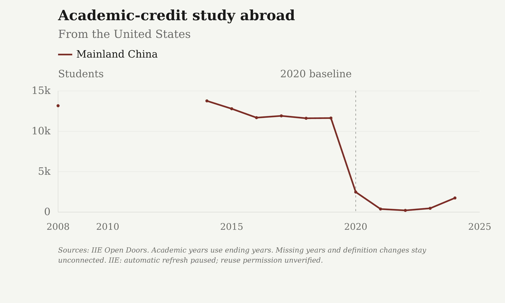
Standalone essay graphics, with titles and sources:
- The Margin of Error: Essay PNG (3000 px wide) · SVG
- Substack: Essay PNG (3000 px wide) · SVG


Hong Kong and Macau
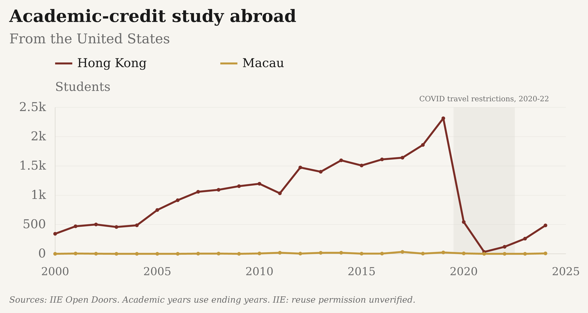
Standalone essay graphics, with titles and sources:
- The Margin of Error: Essay PNG (3000 px wide) · SVG
- Substack: Essay PNG (3000 px wide) · SVG


Logarithmic view — useful when series differ greatly in size
Mainland China
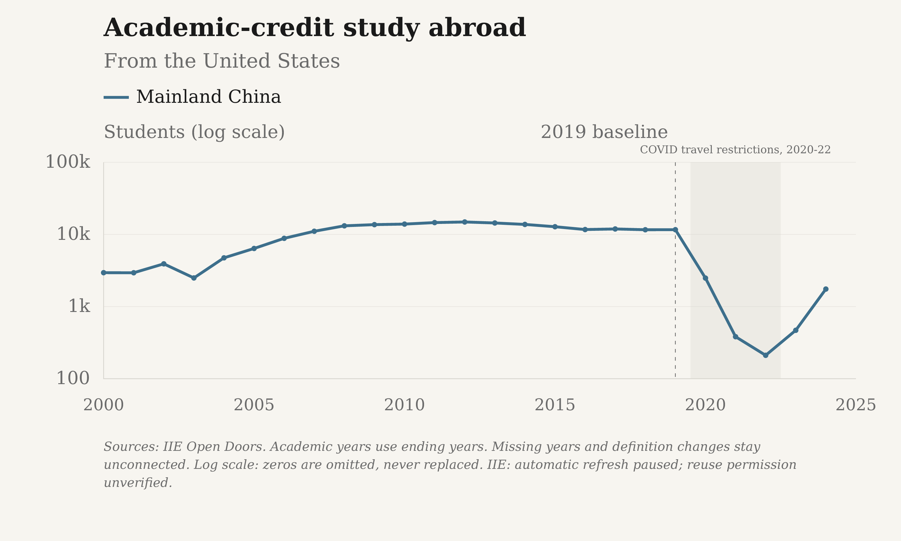
Standalone essay graphics, with titles and sources:
- The Margin of Error: Essay PNG (3000 px wide) · SVG
- Substack: Essay PNG (3000 px wide) · SVG


Hong Kong and Macau
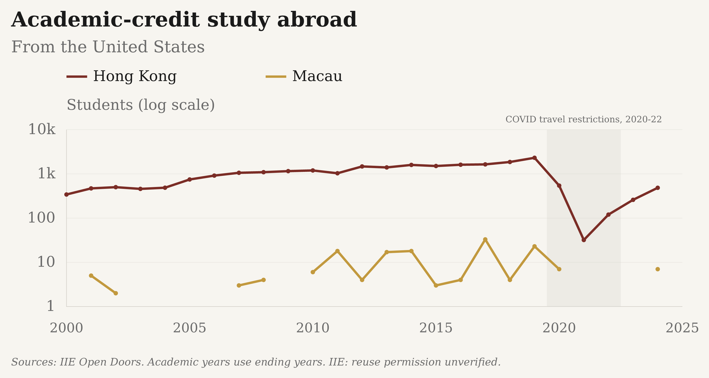
Standalone essay graphics, with titles and sources:
- The Margin of Error: Essay PNG (3000 px wide) · SVG
- Substack: Essay PNG (3000 px wide) · SVG


Exact values, definitions and unavailable series
Mainland China
Source: IIE Open Doors · Open Doors 2025. Latest: 2023/24.
| Period | Value | Status |
|---|---|---|
| 1999/00 | 2,949 | observed |
| 2000/01 | 2,942 | observed |
| 2001/02 | 3,911 | observed |
| 2002/03 | 2,493 | observed |
| 2003/04 | 4,737 | observed |
| 2004/05 | 6,389 | observed |
| 2005/06 | 8,830 | observed |
| 2006/07 | 11,064 | observed |
| 2007/08 | 13,165 | observed |
| 2008/09 | 13,674 | observed |
| 2009/10 | 13,910 | observed |
| 2010/11 | 14,596 | observed |
| 2011/12 | 14,887 | observed |
| 2012/13 | 14,413 | observed |
| 2013/14 | 13,763 | observed |
| 2014/15 | 12,790 | observed |
| 2015/16 | 11,688 | observed |
| 2016/17 | 11,910 | observed |
| 2017/18 | 11,613 | observed |
| 2018/19 | 11,639 | observed |
| 2019/20 | 2,481 | observed |
| 2020/21 | 382 | observed |
| 2021/22 | 211 | observed |
| 2022/23 | 469 | observed |
| 2023/24 | 1,749 | observed |
| 2024/25 | Not available | missing |
Hong Kong
Source: IIE Open Doors · Open Doors 2025. Latest: 2023/24.
| Period | Value | Status |
|---|---|---|
| 1999/00 | 342 | observed |
| 2000/01 | 470 | observed |
| 2001/02 | 501 | observed |
| 2002/03 | 458 | observed |
| 2003/04 | 487 | observed |
| 2004/05 | 748 | observed |
| 2005/06 | 915 | observed |
| 2006/07 | 1,059 | observed |
| 2007/08 | 1,093 | observed |
| 2008/09 | 1,155 | observed |
| 2009/10 | 1,196 | observed |
| 2010/11 | 1,033 | observed |
| 2011/12 | 1,474 | observed |
| 2012/13 | 1,401 | observed |
| 2013/14 | 1,596 | observed |
| 2014/15 | 1,508 | observed |
| 2015/16 | 1,612 | observed |
| 2016/17 | 1,641 | observed |
| 2017/18 | 1,859 | observed |
| 2018/19 | 2,314 | observed |
| 2019/20 | 543 | observed |
| 2020/21 | 32 | observed |
| 2021/22 | 120 | observed |
| 2022/23 | 259 | observed |
| 2023/24 | 485 | observed |
| 2024/25 | Not available | missing |
Macau
Source: IIE Open Doors · Open Doors 2025. Latest: 2023/24.
| Period | Value | Status |
|---|---|---|
| 1999/00 | 0 | observed |
| 2000/01 | 5 | observed |
| 2001/02 | 2 | observed |
| 2002/03 | 0 | observed |
| 2003/04 | 0 | observed |
| 2004/05 | 0 | observed |
| 2005/06 | 0 | observed |
| 2006/07 | 3 | observed |
| 2007/08 | 4 | observed |
| 2008/09 | 0 | observed |
| 2009/10 | 6 | observed |
| 2010/11 | 18 | observed |
| 2011/12 | 4 | observed |
| 2012/13 | 17 | observed |
| 2013/14 | 18 | observed |
| 2014/15 | 3 | observed |
| 2015/16 | 4 | observed |
| 2016/17 | 33 | observed |
| 2017/18 | 4 | observed |
| 2018/19 | 23 | observed |
| 2019/20 | 7 | observed |
| 2020/21 | 0 | observed |
| 2021/22 | 0 | observed |
| 2022/23 | 0 | observed |
| 2023/24 | 7 | observed |
| 2024/25 | Not available | missing |
Travel to the U.S.
Visitor trips · Same year range; separate vertical scales.
Mainland China
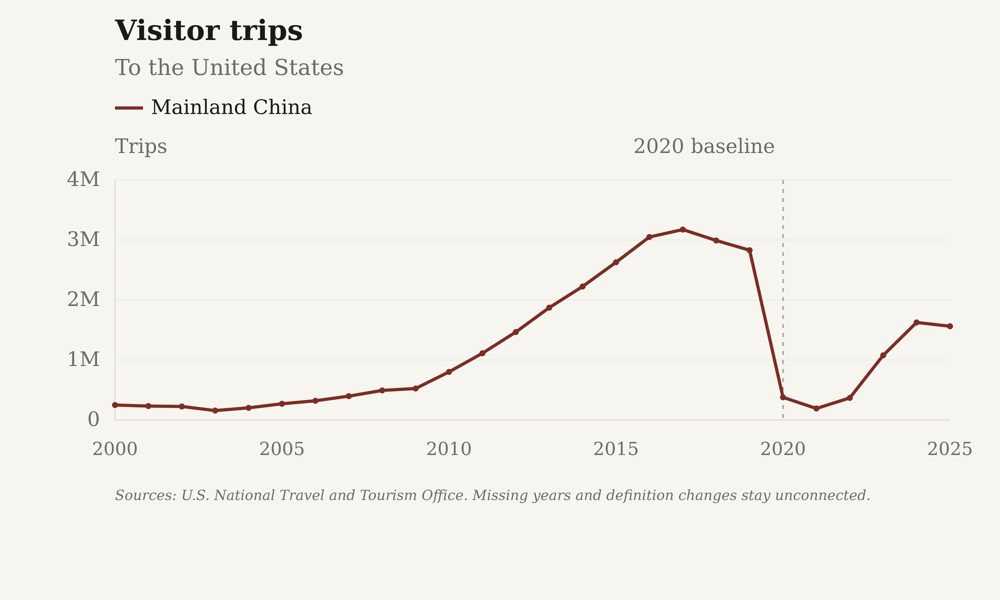
Standalone essay graphics, with titles and sources:
- The Margin of Error: Essay PNG (3000 px wide) · SVG
- Substack: Essay PNG (3000 px wide) · SVG


Hong Kong and Macau
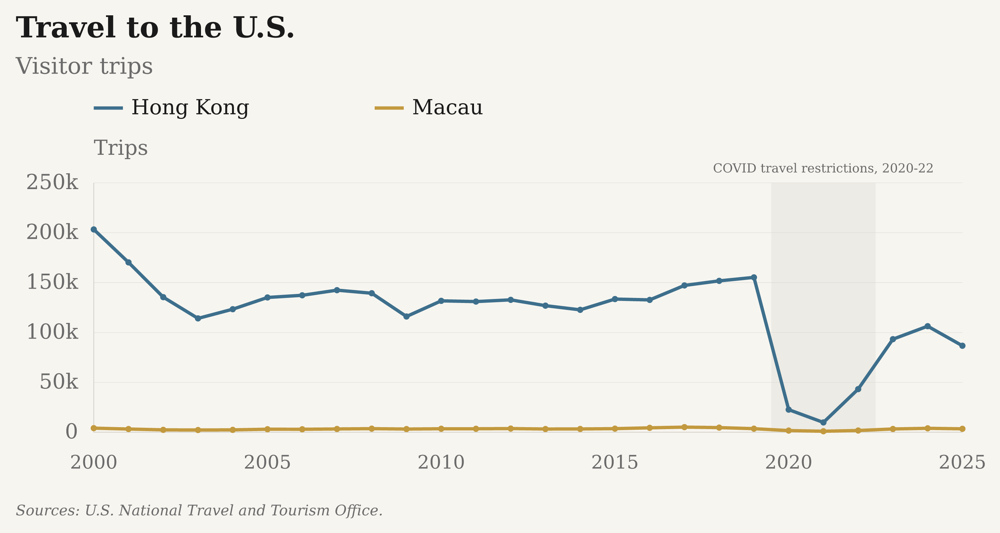
Standalone essay graphics, with titles and sources:
- The Margin of Error: Essay PNG (3000 px wide) · SVG
- Substack: Essay PNG (3000 px wide) · SVG


Logarithmic view — useful when series differ greatly in size
Mainland China
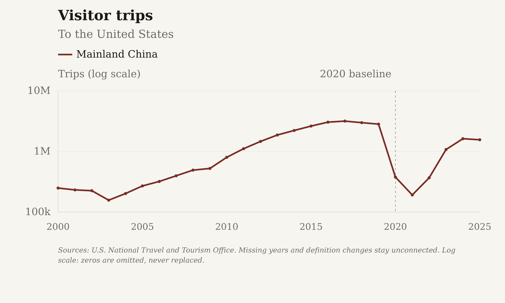
Standalone essay graphics, with titles and sources:
- The Margin of Error: Essay PNG (3000 px wide) · SVG
- Substack: Essay PNG (3000 px wide) · SVG


Hong Kong and Macau
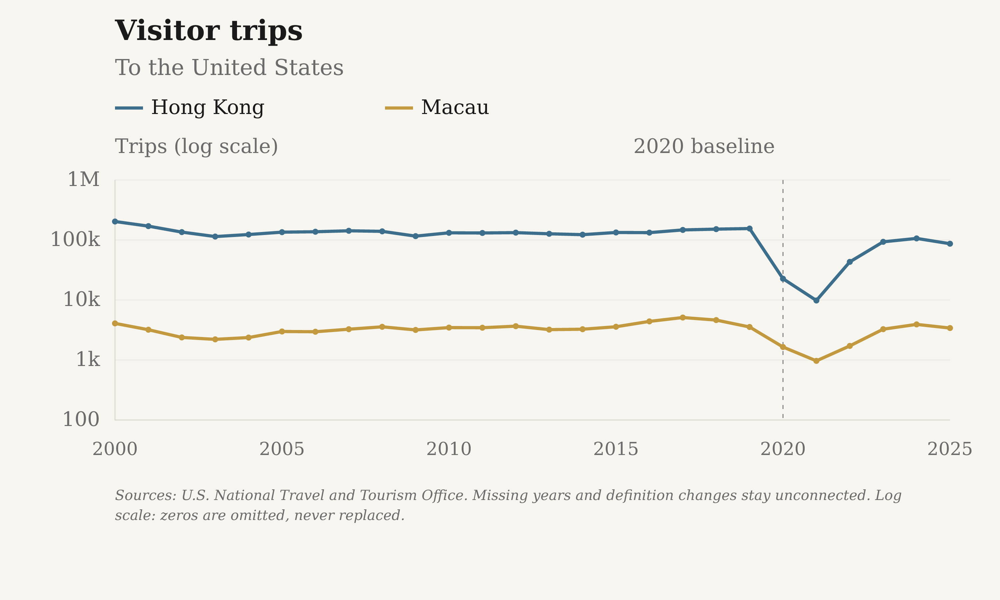
Standalone essay graphics, with titles and sources:
- The Margin of Error: Essay PNG (3000 px wide) · SVG
- Substack: Essay PNG (3000 px wide) · SVG


Exact values, definitions and unavailable series
Mainland China
Source: U.S. National Travel and Tourism Office · Workbook modified 2026-03-24 14:05:25. Latest: 2025.
| Period | Value | Status |
|---|---|---|
| 2000 | 249,441 | observed |
| 2001 | 232,416 | observed |
| 2002 | 225,565 | observed |
| 2003 | 157,326 | observed |
| 2004 | 202,544 | observed |
| 2005 | 270,272 | observed |
| 2006 | 320,450 | observed |
| 2007 | 397,405 | observed |
| 2008 | 492,958 | observed |
| 2009 | 524,817 | observed |
| 2010 | 801,738 | observed |
| 2011 | 1,112,287 | observed |
| 2012 | 1,465,503 | observed |
| 2013 | 1,872,033 | observed |
| 2014 | 2,224,787 | observed |
| 2015 | 2,628,570 | observed |
| 2016 | 3,049,942 | observed |
| 2017 | 3,173,915 | observed |
| 2018 | 2,991,813 | observed |
| 2019 | 2,829,970 | observed |
| 2020 | 378,080 | observed |
| 2021 | 191,776 | observed |
| 2022 | 368,111 | observed |
| 2023 | 1,078,056 | observed |
| 2024 | 1,625,960 | observed |
| 2025 | 1,562,458 | observed |
Hong Kong
Source: U.S. National Travel and Tourism Office · Workbook modified 2026-03-24 14:05:25. Latest: 2025.
| Period | Value | Status |
|---|---|---|
| 2000 | 203,300 | observed |
| 2001 | 170,267 | observed |
| 2002 | 135,409 | observed |
| 2003 | 114,112 | observed |
| 2004 | 123,335 | observed |
| 2005 | 135,108 | observed |
| 2006 | 137,278 | observed |
| 2007 | 142,419 | observed |
| 2008 | 139,359 | observed |
| 2009 | 116,023 | observed |
| 2010 | 131,712 | observed |
| 2011 | 130,986 | observed |
| 2012 | 132,706 | observed |
| 2013 | 126,887 | observed |
| 2014 | 122,693 | observed |
| 2015 | 133,491 | observed |
| 2016 | 132,654 | observed |
| 2017 | 147,168 | observed |
| 2018 | 151,740 | observed |
| 2019 | 155,243 | observed |
| 2020 | 22,631 | observed |
| 2021 | 9,814 | observed |
| 2022 | 43,204 | observed |
| 2023 | 93,280 | observed |
| 2024 | 106,299 | observed |
| 2025 | 86,692 | observed |
Macau
Source: U.S. National Travel and Tourism Office · Workbook modified 2026-03-24 14:05:25. Latest: 2025.
| Period | Value | Status |
|---|---|---|
| 2000 | 4,077 | observed |
| 2001 | 3,195 | observed |
| 2002 | 2,377 | observed |
| 2003 | 2,209 | observed |
| 2004 | 2,366 | observed |
| 2005 | 2,986 | observed |
| 2006 | 2,958 | observed |
| 2007 | 3,260 | observed |
| 2008 | 3,573 | observed |
| 2009 | 3,171 | observed |
| 2010 | 3,469 | observed |
| 2011 | 3,452 | observed |
| 2012 | 3,661 | observed |
| 2013 | 3,207 | observed |
| 2014 | 3,258 | observed |
| 2015 | 3,581 | observed |
| 2016 | 4,401 | observed |
| 2017 | 5,104 | observed |
| 2018 | 4,630 | observed |
| 2019 | 3,550 | observed |
| 2020 | 1,646 | observed |
| 2021 | 967 | observed |
| 2022 | 1,717 | observed |
| 2023 | 3,265 | observed |
| 2024 | 3,921 | observed |
| 2025 | 3,409 | observed |
Travel from the U.S.
Visitor trips · Same year range; separate vertical scales.
Mainland China
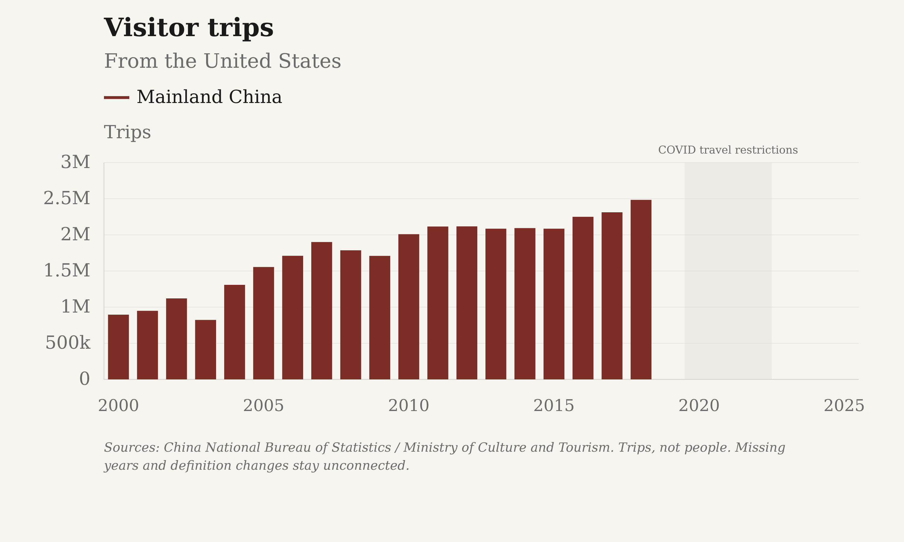
Standalone essay graphics, with titles and sources:
- The Margin of Error: Essay PNG (3000 px wide) · SVG
- Substack: Essay PNG (3000 px wide) · SVG


Hong Kong and Macau
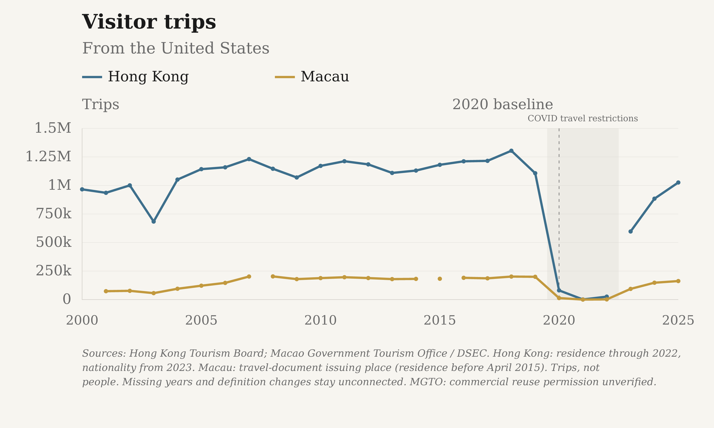
Standalone essay graphics, with titles and sources:
- The Margin of Error: Essay PNG (3000 px wide) · SVG
- Substack: Essay PNG (3000 px wide) · SVG


Logarithmic view — useful when series differ greatly in size
Mainland China
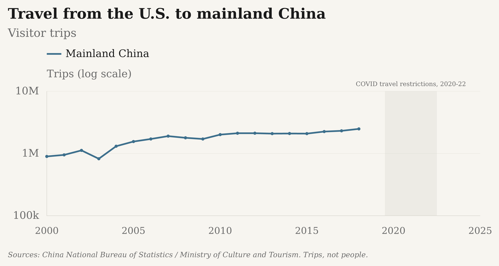
Standalone essay graphics, with titles and sources:
- The Margin of Error: Essay PNG (3000 px wide) · SVG
- Substack: Essay PNG (3000 px wide) · SVG


Hong Kong and Macau
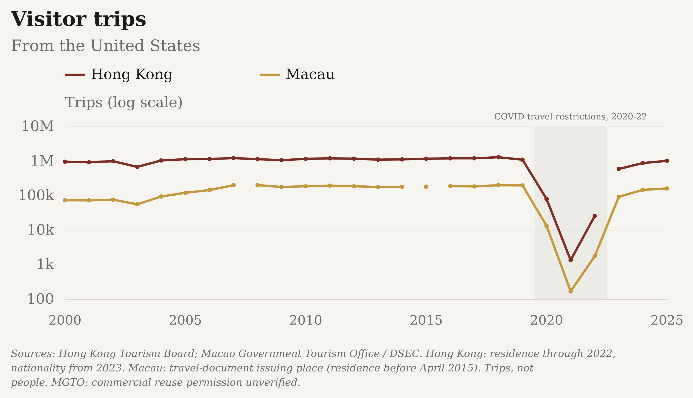
Standalone essay graphics, with titles and sources:
- The Margin of Error: Essay PNG (3000 px wide) · SVG
- Substack: Essay PNG (3000 px wide) · SVG


Exact values, definitions and unavailable series
Mainland China
Source: China National Bureau of Statistics / Ministry of Culture and Tourism · China Statistical Yearbook 2019; overseas visitor arrivals by country/region. Latest: 2018.

| Period | Value | Status |
|---|---|---|
| 2000 | 896,200 | observed |
| 2001 | 949,200 | observed |
| 2002 | 1,121,200 | observed |
| 2003 | 822,511 | observed |
| 2004 | 1,308,627 | observed |
| 2005 | 1,555,500 | observed |
| 2006 | 1,710,300 | observed |
| 2007 | 1,901,200 | observed |
| 2008 | 1,786,400 | observed |
| 2009 | 1,709,800 | observed |
| 2010 | 2,009,595 | observed |
| 2011 | 2,116,100 | observed |
| 2012 | 2,118,100 | observed |
| 2013 | 2,085,300 | observed |
| 2014 | 2,093,200 | observed |
| 2015 | 2,085,800 | observed |
| 2016 | 2,249,600 | observed |
| 2017 | 2,312,900 | observed |
| 2018 | 2,484,600 | observed |
Hong Kong
Source: Hong Kong Tourism Board · HKTDC U.S. Market Profile, 2026; HKTB nationality counts 2023-2025. Latest: 2025.
| Period | Value | Status | Population definition |
|---|---|---|---|
| 2000 | 966,008 | observed | HKTB all-mode visitor arrivals attributed to U.S. country of residence, republished by C&SD/MGTO; not U.S. nationality, unique people or leisure-only tourists |
| 2001 | 935,717 | observed | HKTB all-mode visitor arrivals attributed to U.S. country of residence, republished by C&SD/MGTO; not U.S. nationality, unique people or leisure-only tourists |
| 2002 | 1,000,844 | observed | HKTB all-mode visitor arrivals attributed to U.S. country of residence, republished by C&SD/MGTO; not U.S. nationality, unique people or leisure-only tourists |
| 2003 | 683,791 | observed | HKTB all-mode visitor arrivals attributed to U.S. country of residence, republished by C&SD/MGTO; not U.S. nationality, unique people or leisure-only tourists |
| 2004 | 1,051,696 | observed | HKTB all-mode visitor arrivals attributed to U.S. country of residence, republished by C&SD/MGTO; not U.S. nationality, unique people or leisure-only tourists |
| 2005 | 1,143,089 | observed | HKTB all-mode visitor arrivals attributed to U.S. country of residence, republished by C&SD/MGTO; not U.S. nationality, unique people or leisure-only tourists |
| 2006 | 1,159,025 | observed | HKTB all-mode visitor arrivals attributed to U.S. country of residence, republished by C&SD/MGTO; not U.S. nationality, unique people or leisure-only tourists |
| 2007 | 1,230,927 | observed | HKTB all-mode visitor arrivals attributed to U.S. country of residence, republished by C&SD/MGTO; not U.S. nationality, unique people or leisure-only tourists |
| 2008 | 1,146,364 | observed | HKTB all-mode visitor arrivals attributed to U.S. country of residence, republished by C&SD/MGTO; not U.S. nationality, unique people or leisure-only tourists |
| 2009 | 1,070,073 | observed | HKTB all-mode visitor arrivals attributed to U.S. country of residence, republished by C&SD/MGTO; not U.S. nationality, unique people or leisure-only tourists |
| 2010 | 1,171,419 | observed | HKTB all-mode visitor arrivals attributed to U.S. country of residence, republished by C&SD/MGTO; not U.S. nationality, unique people or leisure-only tourists |
| 2011 | 1,212,336 | observed | HKTB all-mode visitor arrivals attributed to U.S. country of residence, republished by C&SD/MGTO; not U.S. nationality, unique people or leisure-only tourists |
| 2012 | 1,184,757 | observed | HKTB all-mode visitor arrivals attributed to U.S. country of residence, republished by C&SD/MGTO; not U.S. nationality, unique people or leisure-only tourists |
| 2013 | 1,109,841 | observed | HKTB all-mode visitor arrivals attributed to U.S. country of residence, republished by C&SD/MGTO; not U.S. nationality, unique people or leisure-only tourists |
| 2014 | 1,130,566 | observed | HKTB all-mode visitor arrivals attributed to U.S. country of residence, republished by C&SD/MGTO; not U.S. nationality, unique people or leisure-only tourists |
| 2015 | 1,181,024 | observed | HKTB all-mode visitor arrivals attributed to U.S. country of residence, republished by C&SD/MGTO; not U.S. nationality, unique people or leisure-only tourists |
| 2016 | 1,211,539 | observed | HKTB all-mode visitor arrivals attributed to U.S. country of residence, republished by C&SD/MGTO; not U.S. nationality, unique people or leisure-only tourists |
| 2017 | 1,215,629 | observed | HKTB all-mode visitor arrivals attributed to U.S. country of residence, republished by C&SD/MGTO; not U.S. nationality, unique people or leisure-only tourists |
| 2018 | 1,304,232 | observed | HKTB all-mode visitor arrivals attributed to U.S. country of residence, republished by C&SD/MGTO; not U.S. nationality, unique people or leisure-only tourists |
| 2019 | 1,107,165 | observed | HKTB all-mode visitor arrivals attributed to U.S. country of residence, republished by C&SD/MGTO; not U.S. nationality, unique people or leisure-only tourists |
| 2020 | 80,825 | observed | HKTB all-mode visitor arrivals attributed to U.S. country of residence, republished by C&SD/MGTO; not U.S. nationality, unique people or leisure-only tourists |
| 2021 | 1,365 | observed | HKTB all-mode visitor arrivals attributed to U.S. country of residence, republished by C&SD/MGTO; not U.S. nationality, unique people or leisure-only tourists |
| 2022 | 25,987 | observed | HKTB all-mode visitor arrivals attributed to U.S. country of residence, republished by C&SD/MGTO; not U.S. nationality, unique people or leisure-only tourists |
| 2023 | 596,958 | observed | HKTB all-mode visitor arrivals attributed to U.S. nationality, as republished in HKTDC's U.S. Market Profile; not U.S. residence, unique people, leisure-only tourists or air-survey estimates |
| 2024 | 884,262 | observed | HKTB all-mode visitor arrivals attributed to U.S. nationality, as republished in HKTDC's U.S. Market Profile; not U.S. residence, unique people, leisure-only tourists or air-survey estimates |
| 2025 | 1,026,030 | observed | HKTB all-mode visitor arrivals attributed to U.S. nationality, as republished in HKTDC's U.S. Market Profile; not U.S. residence, unique people, leisure-only tourists or air-survey estimates |
Macau
Source: Macao Government Tourism Office / DSEC · MGTO December 2025. Latest: 2025.
| Period | Value | Status | Population definition |
|---|---|---|---|
| 2000 | 74,353 | observed | MGTO/DSEC U.S.-attributed arrivals by place of residence; includes non-resident workers and students; same-day and overnight trips, not unique people |
| 2001 | 73,607 | observed | MGTO/DSEC U.S.-attributed arrivals by place of residence; includes non-resident workers and students; same-day and overnight trips, not unique people |
| 2002 | 76,904 | observed | MGTO/DSEC U.S.-attributed arrivals by place of residence; includes non-resident workers and students; same-day and overnight trips, not unique people |
| 2003 | 56,642 | observed | MGTO/DSEC U.S.-attributed arrivals by place of residence; includes non-resident workers and students; same-day and overnight trips, not unique people |
| 2004 | 95,090 | observed | MGTO/DSEC U.S.-attributed arrivals by place of residence; includes non-resident workers and students; same-day and overnight trips, not unique people |
| 2005 | 121,889 | observed | MGTO/DSEC U.S.-attributed arrivals by place of residence; includes non-resident workers and students; same-day and overnight trips, not unique people |
| 2006 | 146,468 | observed | MGTO/DSEC U.S.-attributed arrivals by place of residence; includes non-resident workers and students; same-day and overnight trips, not unique people |
| 2007 | 202,137 | observed | MGTO/DSEC U.S.-attributed arrivals by place of residence; includes non-resident workers and students; same-day and overnight trips, not unique people |
| 2008 | 203,198 | observed | MGTO/DSEC U.S.-attributed arrivals by place of residence; same-day and overnight trips, not unique people |
| 2009 | 179,500 | observed | MGTO/DSEC U.S.-attributed arrivals by place of residence; same-day and overnight trips, not unique people |
| 2010 | 188,254 | observed | MGTO/DSEC U.S.-attributed arrivals by place of residence; same-day and overnight trips, not unique people |
| 2011 | 196,065 | observed | MGTO/DSEC U.S.-attributed arrivals by place of residence; same-day and overnight trips, not unique people |
| 2012 | 188,730 | observed | MGTO/DSEC U.S.-attributed arrivals by place of residence; same-day and overnight trips, not unique people |
| 2013 | 179,527 | observed | MGTO/DSEC U.S.-attributed arrivals by place of residence; same-day and overnight trips, not unique people |
| 2014 | 181,457 | observed | MGTO/DSEC U.S.-attributed arrivals by place of residence; same-day and overnight trips, not unique people |
| 2015 | 182,532 | observed | MGTO/DSEC U.S.-attributed arrivals by mixed residence/document-issue transition; same-day and overnight trips, not unique people |
| 2016 | 190,885 | observed | MGTO/DSEC U.S.-attributed arrivals by place of issue of travel document; same-day and overnight trips, not unique people |
| 2017 | 186,378 | observed | MGTO/DSEC U.S.-attributed arrivals by place of issue of travel document; same-day and overnight trips, not unique people |
| 2018 | 201,810 | observed | MGTO/DSEC U.S.-attributed arrivals by place of issue of travel document; same-day and overnight trips, not unique people |
| 2019 | 199,800 | observed | MGTO/DSEC U.S.-attributed arrivals by place of issue of travel document; same-day and overnight trips, not unique people |
| 2020 | 13,489 | observed | MGTO/DSEC U.S.-attributed arrivals by place of issue of travel document; same-day and overnight trips, not unique people |
| 2021 | 171 | observed | MGTO/DSEC U.S.-attributed arrivals by place of issue of travel document; same-day and overnight trips, not unique people |
| 2022 | 1,777 | observed | MGTO/DSEC U.S.-attributed arrivals by place of issue of travel document; same-day and overnight trips, not unique people |
| 2023 | 93,814 | observed | MGTO/DSEC U.S.-attributed arrivals by place of issue of travel document; same-day and overnight trips, not unique people |
| 2024 | 147,941 | observed | MGTO/DSEC U.S.-attributed arrivals by place of issue of travel document; same-day and overnight trips, not unique people |
| 2025 | 162,460 | observed | MGTO/DSEC U.S.-attributed arrivals by place of issue of travel document; same-day and overnight trips, not unique people |
Travel to the U.S.
No verified annual series for these geographies in this direction. Missing is not zero.
Exact values, definitions and unavailable series
Mainland China
Reviewed SIAT estimates cover U.S.-resident air travel to mainland China and Hong Kong only. Other directions are unverified; missing estimates are not zero or all-mode arrivals.
Hong Kong
Reviewed SIAT estimates cover U.S.-resident air travel to mainland China and Hong Kong only. Other directions are unverified; missing estimates are not zero or all-mode arrivals.
Macau
Reviewed SIAT estimates cover U.S.-resident air travel to mainland China and Hong Kong only. Other directions are unverified; missing estimates are not zero or all-mode arrivals.
Travel from the U.S.
U.S. air travel · Same year range; separate vertical scales.
Mainland China
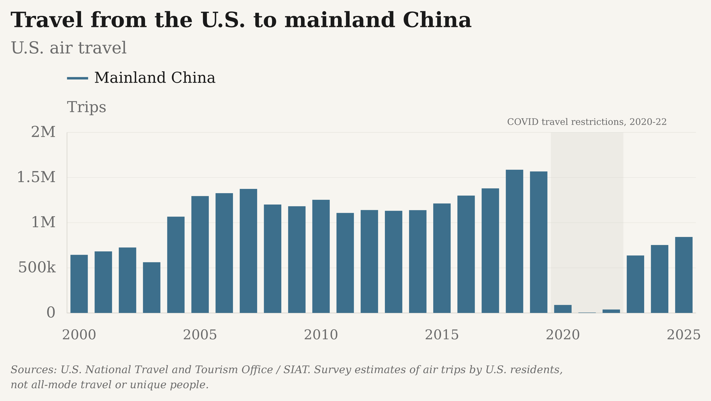
Standalone essay graphics, with titles and sources:
- The Margin of Error: Essay PNG (3000 px wide) · SVG
- Substack: Essay PNG (3000 px wide) · SVG


Hong Kong and Macau
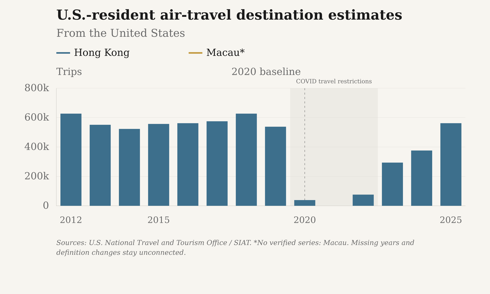
Standalone essay graphics, with titles and sources:
- The Margin of Error: Essay PNG (3000 px wide) · SVG
- Substack: Essay PNG (3000 px wide) · SVG


Logarithmic view — useful when series differ greatly in size
Mainland China
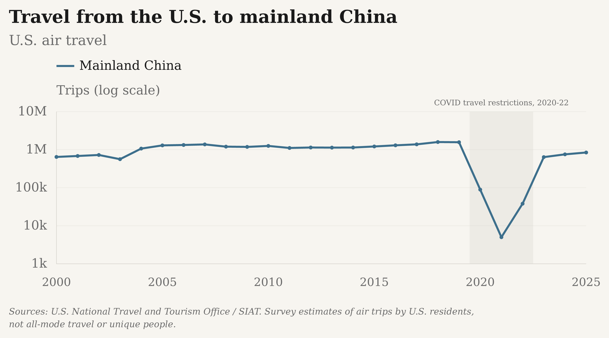
Standalone essay graphics, with titles and sources:
- The Margin of Error: Essay PNG (3000 px wide) · SVG
- Substack: Essay PNG (3000 px wide) · SVG


Hong Kong and Macau
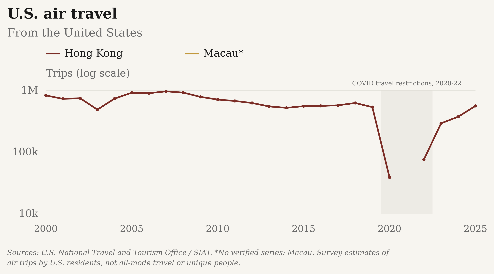
Standalone essay graphics, with titles and sources:
- The Margin of Error: Essay PNG (3000 px wide) · SVG
- Substack: Essay PNG (3000 px wide) · SVG


Exact values, definitions and unavailable series
Mainland China
Source: U.S. National Travel and Tourism Office / SIAT · NTTO public SIAT outbound monitor; 6 October 2026. Latest: 2025.
| Period | Value | Status |
|---|---|---|
| 2000 | 644,000 | estimated |
| 2001 | 682,000 | estimated |
| 2002 | 725,000 | estimated |
| 2003 | 562,000 | estimated |
| 2004 | 1,067,000 | estimated |
| 2005 | 1,295,000 | estimated |
| 2006 | 1,327,000 | estimated |
| 2007 | 1,374,000 | estimated |
| 2008 | 1,201,000 | estimated |
| 2009 | 1,182,000 | estimated |
| 2010 | 1,254,000 | estimated |
| 2011 | 1,108,000 | estimated |
| 2012 | 1,140,000 | estimated |
| 2013 | 1,132,000 | estimated |
| 2014 | 1,139,000 | estimated |
| 2015 | 1,213,000 | estimated |
| 2016 | 1,300,000 | estimated |
| 2017 | 1,380,000 | estimated |
| 2018 | 1,587,000 | estimated |
| 2019 | 1,568,000 | estimated |
| 2020 | 89,000 | estimated |
| 2021 | 5,000 | estimated |
| 2022 | 38,000 | estimated |
| 2023 | 637,000 | estimated |
| 2024 | 753,000 | estimated |
| 2025 | 842,000 | estimated |
Hong Kong
Source: U.S. National Travel and Tourism Office / SIAT · NTTO public SIAT outbound monitor; 6 October 2026. Latest: 2025.
| Period | Value | Status |
|---|---|---|
| 2000 | 832,000 | estimated |
| 2001 | 732,000 | estimated |
| 2002 | 749,000 | estimated |
| 2003 | 489,000 | estimated |
| 2004 | 738,000 | estimated |
| 2005 | 921,000 | estimated |
| 2006 | 904,000 | estimated |
| 2007 | 968,000 | estimated |
| 2008 | 924,000 | estimated |
| 2009 | 788,000 | estimated |
| 2010 | 713,000 | estimated |
| 2011 | 676,000 | estimated |
| 2012 | 627,000 | estimated |
| 2013 | 551,000 | estimated |
| 2014 | 523,000 | estimated |
| 2015 | 557,000 | estimated |
| 2016 | 562,000 | estimated |
| 2017 | 575,000 | estimated |
| 2018 | 627,000 | estimated |
| 2019 | 538,000 | estimated |
| 2020 | 39,000 | low_reliability |
| 2022 | 76,000 | low_reliability |
| 2023 | 294,000 | estimated |
| 2024 | 376,000 | estimated |
| 2025 | 562,000 | estimated |
Macau
Reviewed SIAT estimates cover U.S.-resident air travel to mainland China and Hong Kong only. Other directions are unverified; missing estimates are not zero or all-mode arrivals.
Travel to the U.S.
No verified annual series for these geographies in this direction. Missing is not zero.
Exact values, definitions and unavailable series
Mainland China
Available arrival sources are all-purpose trips; no separately verified leisure-purpose series for this direction.
Hong Kong
Available arrival sources are all-purpose trips; no separately verified leisure-purpose series for this direction.
Macau
Available arrival sources are all-purpose trips; no separately verified leisure-purpose series for this direction.
Travel from the U.S.
No verified annual series for these geographies in this direction. Missing is not zero.
Exact values, definitions and unavailable series
Mainland China
Available arrival sources are all-purpose trips; no separately verified leisure-purpose series for this direction.
Hong Kong
Available arrival sources are all-purpose trips; no separately verified leisure-purpose series for this direction.
Macau
Available arrival sources are all-purpose trips; no separately verified leisure-purpose series for this direction.
Goods trade · To the United States
Same year range; separate vertical scales.
Mainland China
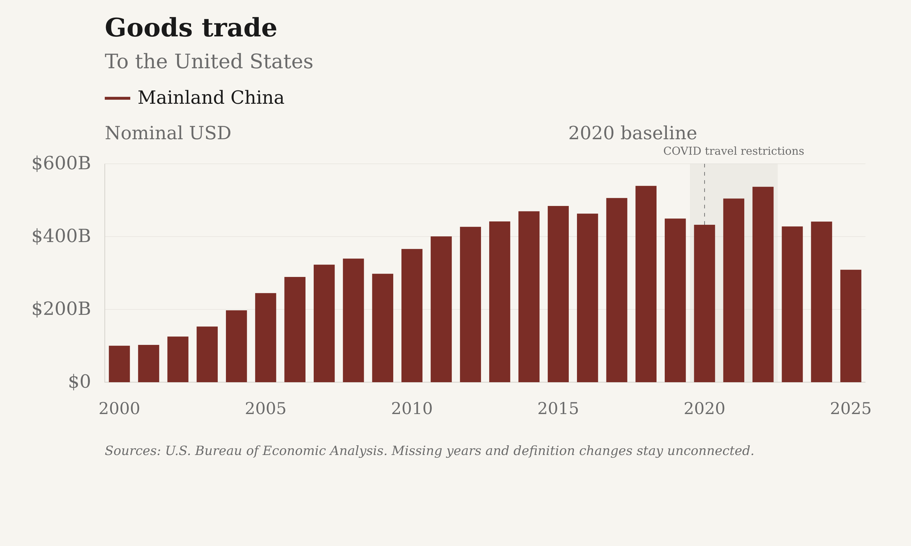
Standalone essay graphics, with titles and sources:
- The Margin of Error: Essay PNG (3000 px wide) · SVG
- Substack: Essay PNG (3000 px wide) · SVG


Hong Kong and Macau
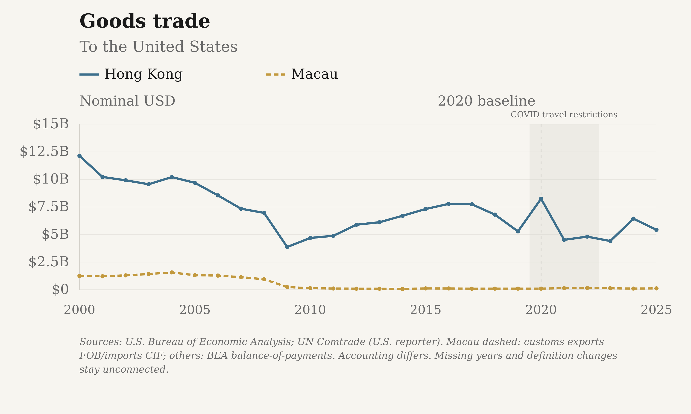
Standalone essay graphics, with titles and sources:
- The Margin of Error: Essay PNG (3000 px wide) · SVG
- Substack: Essay PNG (3000 px wide) · SVG


Macau (dashed) uses customs accounting: exports FOB, imports CIF. Mainland China and Hong Kong use balance-of-payments data; the accounting bases differ.
Logarithmic view — useful when series differ greatly in size
Mainland China
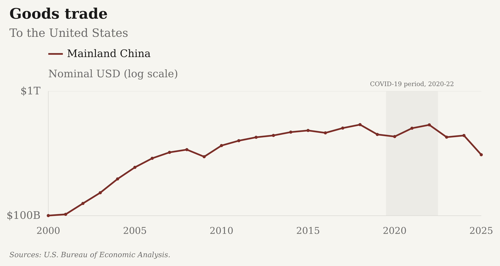
Standalone essay graphics, with titles and sources:
- The Margin of Error: Essay PNG (3000 px wide) · SVG
- Substack: Essay PNG (3000 px wide) · SVG


Hong Kong and Macau
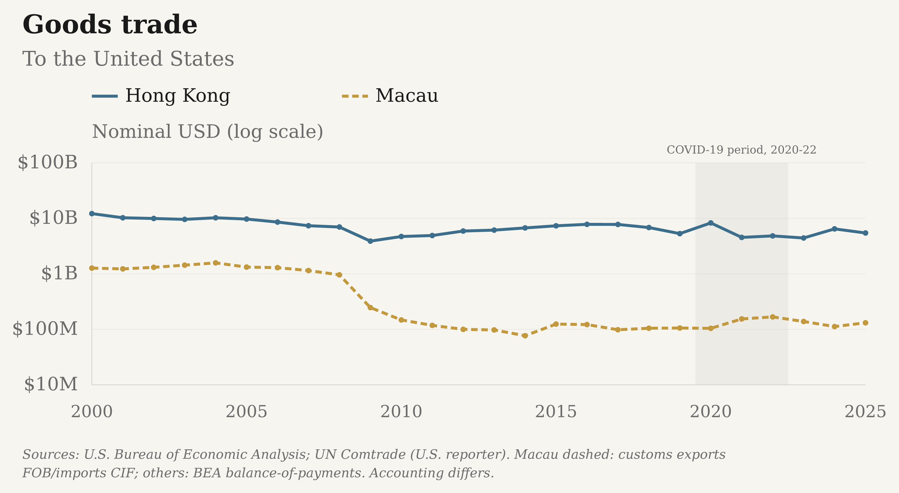
Standalone essay graphics, with titles and sources:
- The Margin of Error: Essay PNG (3000 px wide) · SVG
- Substack: Essay PNG (3000 px wide) · SVG


Exact values, definitions and unavailable series
Mainland China
Source: U.S. Bureau of Economic Analysis · Last updated September 3, 2026. Latest: 2025.
| Period | Value | Status |
|---|---|---|
| 2000 | $100,231,000,000 | observed |
| 2001 | $102,570,000,000 | observed |
| 2002 | $125,498,000,000 | observed |
| 2003 | $152,974,000,000 | observed |
| 2004 | $197,456,000,000 | observed |
| 2005 | $244,699,000,000 | observed |
| 2006 | $289,246,000,000 | observed |
| 2007 | $322,975,000,000 | observed |
| 2008 | $339,581,000,000 | observed |
| 2009 | $297,872,000,000 | observed |
| 2010 | $366,126,000,000 | observed |
| 2011 | $400,632,000,000 | observed |
| 2012 | $426,792,000,000 | observed |
| 2013 | $441,616,000,000 | observed |
| 2014 | $469,660,000,000 | observed |
| 2015 | $484,071,000,000 | observed |
| 2016 | $463,089,000,000 | observed |
| 2017 | $506,011,000,000 | observed |
| 2018 | $539,394,000,000 | observed |
| 2019 | $449,670,000,000 | observed |
| 2020 | $432,582,000,000 | observed |
| 2021 | $504,653,000,000 | observed |
| 2022 | $536,982,000,000 | observed |
| 2023 | $427,873,000,000 | observed |
| 2024 | $441,139,000,000 | observed |
| 2025 | $309,039,000,000 | observed |
Hong Kong
Source: U.S. Bureau of Economic Analysis · Last updated September 3, 2026. Latest: 2025.
| Period | Value | Status |
|---|---|---|
| 2000 | $12,137,000,000 | observed |
| 2001 | $10,221,000,000 | observed |
| 2002 | $9,919,000,000 | observed |
| 2003 | $9,560,000,000 | observed |
| 2004 | $10,211,000,000 | observed |
| 2005 | $9,692,000,000 | observed |
| 2006 | $8,552,000,000 | observed |
| 2007 | $7,345,000,000 | observed |
| 2008 | $6,965,000,000 | observed |
| 2009 | $3,877,000,000 | observed |
| 2010 | $4,696,000,000 | observed |
| 2011 | $4,892,000,000 | observed |
| 2012 | $5,894,000,000 | observed |
| 2013 | $6,120,000,000 | observed |
| 2014 | $6,707,000,000 | observed |
| 2015 | $7,318,000,000 | observed |
| 2016 | $7,783,000,000 | observed |
| 2017 | $7,749,000,000 | observed |
| 2018 | $6,809,000,000 | observed |
| 2019 | $5,291,000,000 | observed |
| 2020 | $8,249,000,000 | observed |
| 2021 | $4,526,000,000 | observed |
| 2022 | $4,816,000,000 | observed |
| 2023 | $4,416,000,000 | observed |
| 2024 | $6,442,000,000 | observed |
| 2025 | $5,436,000,000 | observed |
Macau
Source: UN Comtrade (U.S. reporter) · Comtrade annual 2025. Latest: 2025.
| Period | Value | Status |
|---|---|---|
| 2000 | $1,266,316,849 | observed |
| 2001 | $1,225,130,166 | observed |
| 2002 | $1,307,529,055 | observed |
| 2003 | $1,430,304,184 | observed |
| 2004 | $1,573,881,187 | observed |
| 2005 | $1,319,918,382 | observed |
| 2006 | $1,289,591,693 | observed |
| 2007 | $1,143,643,499 | observed |
| 2008 | $957,208,918 | observed |
| 2009 | $246,097,383 | observed |
| 2010 | $147,328,594 | observed |
| 2011 | $117,636,811 | observed |
| 2012 | $99,701,456 | observed |
| 2013 | $97,317,236 | observed |
| 2014 | $76,569,008 | observed |
| 2015 | $124,123,841 | observed |
| 2016 | $121,638,905 | observed |
| 2017 | $98,094,903 | observed |
| 2018 | $104,450,691 | observed |
| 2019 | $105,407,444 | observed |
| 2020 | $103,941,211 | observed |
| 2021 | $153,665,898 | observed |
| 2022 | $167,119,363 | observed |
| 2023 | $138,194,264 | observed |
| 2024 | $111,944,056 | observed |
| 2025 | $130,894,803 | observed |
Goods trade · From the United States
Same year range; separate vertical scales.
Mainland China
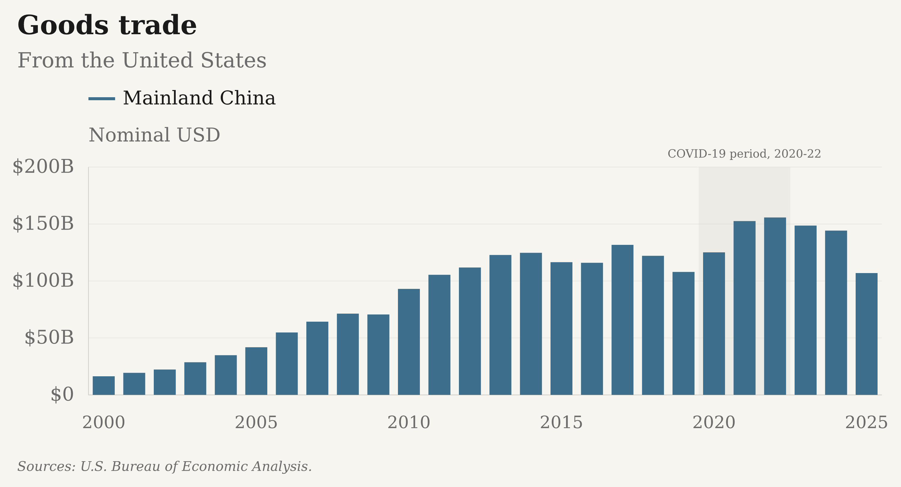
Standalone essay graphics, with titles and sources:
- The Margin of Error: Essay PNG (3000 px wide) · SVG
- Substack: Essay PNG (3000 px wide) · SVG


Hong Kong and Macau
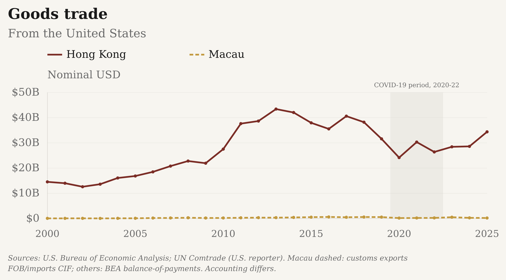
Standalone essay graphics, with titles and sources:
- The Margin of Error: Essay PNG (3000 px wide) · SVG
- Substack: Essay PNG (3000 px wide) · SVG


Macau (dashed) uses customs accounting: exports FOB, imports CIF. Mainland China and Hong Kong use balance-of-payments data; the accounting bases differ.
Logarithmic view — useful when series differ greatly in size
Mainland China
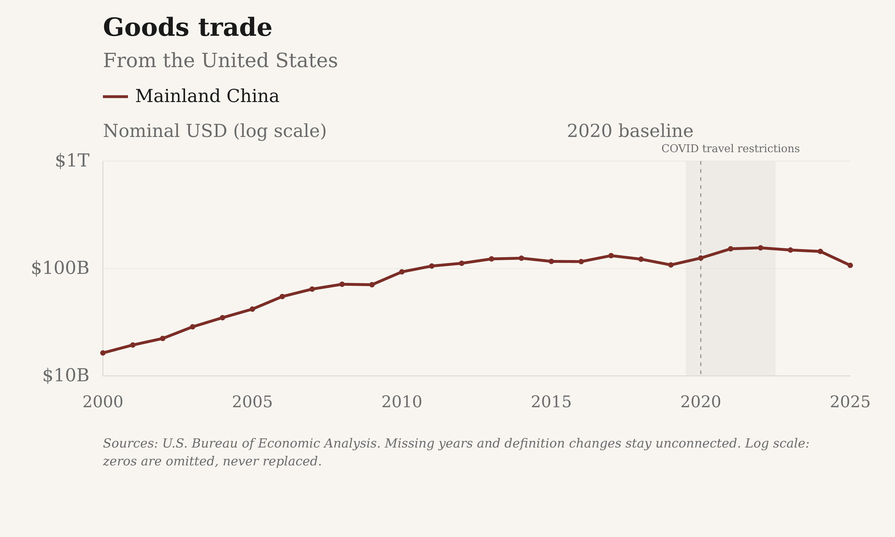
Standalone essay graphics, with titles and sources:
- The Margin of Error: Essay PNG (3000 px wide) · SVG
- Substack: Essay PNG (3000 px wide) · SVG


Hong Kong and Macau
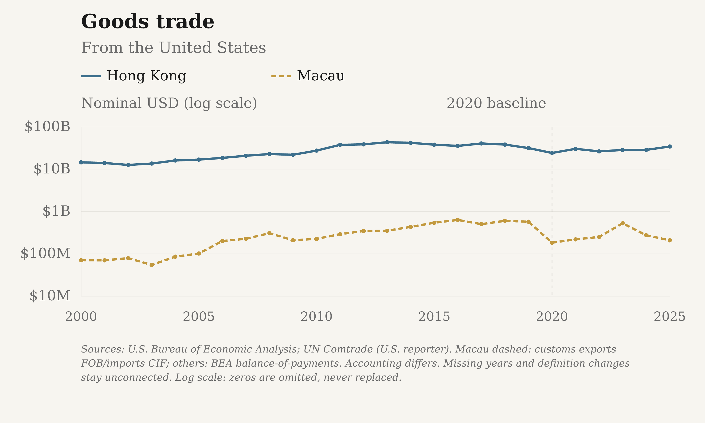
Standalone essay graphics, with titles and sources:
- The Margin of Error: Essay PNG (3000 px wide) · SVG
- Substack: Essay PNG (3000 px wide) · SVG


Exact values, definitions and unavailable series
Mainland China
Source: U.S. Bureau of Economic Analysis · Last updated September 3, 2026. Latest: 2025.
| Period | Value | Status |
|---|---|---|
| 2000 | $16,365,000,000 | observed |
| 2001 | $19,396,000,000 | observed |
| 2002 | $22,317,000,000 | observed |
| 2003 | $28,646,000,000 | observed |
| 2004 | $34,833,000,000 | observed |
| 2005 | $41,874,000,000 | observed |
| 2006 | $54,813,000,000 | observed |
| 2007 | $64,313,000,000 | observed |
| 2008 | $71,346,000,000 | observed |
| 2009 | $70,636,000,000 | observed |
| 2010 | $93,059,000,000 | observed |
| 2011 | $105,445,000,000 | observed |
| 2012 | $111,855,000,000 | observed |
| 2013 | $122,852,000,000 | observed |
| 2014 | $124,728,000,000 | observed |
| 2015 | $116,505,000,000 | observed |
| 2016 | $115,991,000,000 | observed |
| 2017 | $131,746,000,000 | observed |
| 2018 | $122,128,000,000 | observed |
| 2019 | $107,980,000,000 | observed |
| 2020 | $125,145,000,000 | observed |
| 2021 | $152,572,000,000 | observed |
| 2022 | $155,738,000,000 | observed |
| 2023 | $148,631,000,000 | observed |
| 2024 | $144,272,000,000 | observed |
| 2025 | $107,002,000,000 | observed |
Hong Kong
Source: U.S. Bureau of Economic Analysis · Last updated September 3, 2026. Latest: 2025.
| Period | Value | Status |
|---|---|---|
| 2000 | $14,544,000,000 | observed |
| 2001 | $14,004,000,000 | observed |
| 2002 | $12,607,000,000 | observed |
| 2003 | $13,616,000,000 | observed |
| 2004 | $16,084,000,000 | observed |
| 2005 | $16,866,000,000 | observed |
| 2006 | $18,505,000,000 | observed |
| 2007 | $20,797,000,000 | observed |
| 2008 | $22,802,000,000 | observed |
| 2009 | $21,945,000,000 | observed |
| 2010 | $27,531,000,000 | observed |
| 2011 | $37,637,000,000 | observed |
| 2012 | $38,661,000,000 | observed |
| 2013 | $43,414,000,000 | observed |
| 2014 | $42,052,000,000 | observed |
| 2015 | $37,954,000,000 | observed |
| 2016 | $35,545,000,000 | observed |
| 2017 | $40,610,000,000 | observed |
| 2018 | $38,213,000,000 | observed |
| 2019 | $31,605,000,000 | observed |
| 2020 | $24,170,000,000 | observed |
| 2021 | $30,327,000,000 | observed |
| 2022 | $26,407,000,000 | observed |
| 2023 | $28,442,000,000 | observed |
| 2024 | $28,620,000,000 | observed |
| 2025 | $34,384,000,000 | observed |
Macau
Source: UN Comtrade (U.S. reporter) · Comtrade annual 2025. Latest: 2025.
| Period | Value | Status |
|---|---|---|
| 2000 | $70,541,060 | observed |
| 2001 | $70,135,563 | observed |
| 2002 | $78,939,432 | observed |
| 2003 | $54,535,247 | observed |
| 2004 | $85,513,585 | observed |
| 2005 | $101,575,899 | observed |
| 2006 | $200,225,783 | observed |
| 2007 | $226,447,445 | observed |
| 2008 | $306,742,843 | observed |
| 2009 | $209,188,542 | observed |
| 2010 | $225,189,155 | observed |
| 2011 | $291,499,829 | observed |
| 2012 | $345,460,636 | observed |
| 2013 | $351,203,334 | observed |
| 2014 | $433,270,582 | observed |
| 2015 | $542,354,584 | observed |
| 2016 | $632,019,604 | observed |
| 2017 | $502,134,916 | observed |
| 2018 | $601,781,814 | observed |
| 2019 | $572,248,439 | observed |
| 2020 | $183,004,729 | observed |
| 2021 | $219,445,314 | observed |
| 2022 | $249,607,355 | observed |
| 2023 | $526,059,474 | observed |
| 2024 | $274,969,709 | observed |
| 2025 | $208,276,500 | observed |
Services trade · To the United States
Same year range; separate vertical scales.
Mainland China
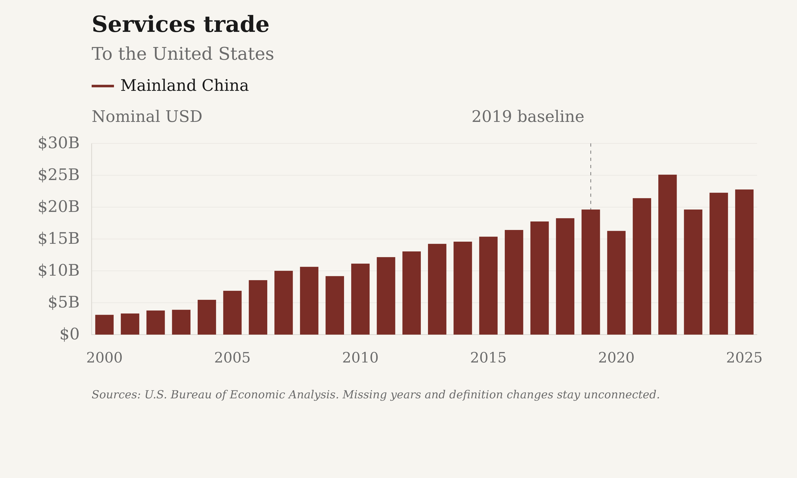
Standalone essay graphics, with titles and sources:
- The Margin of Error: Essay PNG (3000 px wide) · SVG
- Substack: Essay PNG (3000 px wide) · SVG


Hong Kong and Macau
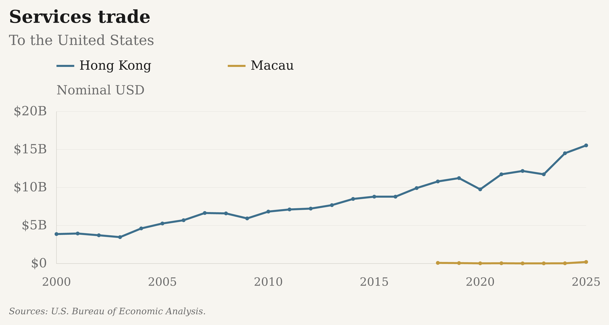
Standalone essay graphics, with titles and sources:
- The Margin of Error: Essay PNG (3000 px wide) · SVG
- Substack: Essay PNG (3000 px wide) · SVG


Logarithmic view — useful when series differ greatly in size
Mainland China
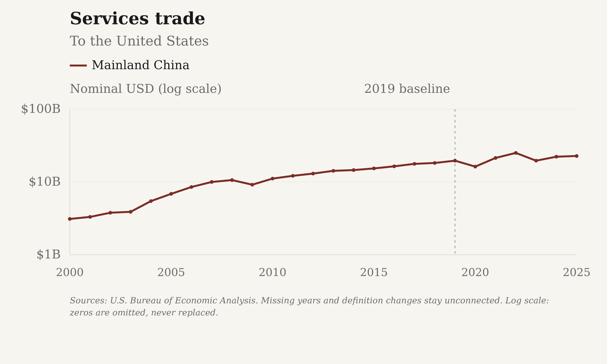
Standalone essay graphics, with titles and sources:
- The Margin of Error: Essay PNG (3000 px wide) · SVG
- Substack: Essay PNG (3000 px wide) · SVG


Hong Kong and Macau
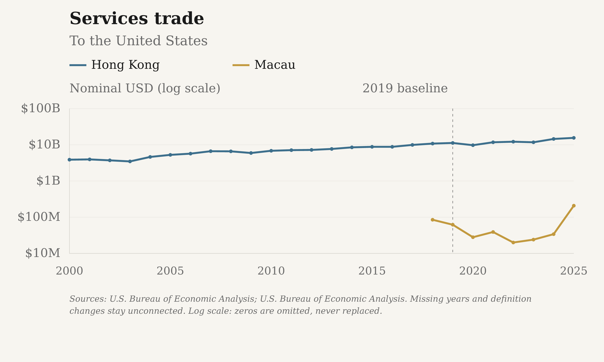
Standalone essay graphics, with titles and sources:
- The Margin of Error: Essay PNG (3000 px wide) · SVG
- Substack: Essay PNG (3000 px wide) · SVG


Exact values, definitions and unavailable series
Mainland China
Source: U.S. Bureau of Economic Analysis · Last updated September 3, 2026. Latest: 2025.
| Period | Value | Status |
|---|---|---|
| 2000 | $3,109,000,000 | observed |
| 2001 | $3,315,000,000 | observed |
| 2002 | $3,784,000,000 | observed |
| 2003 | $3,895,000,000 | observed |
| 2004 | $5,463,000,000 | observed |
| 2005 | $6,875,000,000 | observed |
| 2006 | $8,537,000,000 | observed |
| 2007 | $10,013,000,000 | observed |
| 2008 | $10,632,000,000 | observed |
| 2009 | $9,179,000,000 | observed |
| 2010 | $11,138,000,000 | observed |
| 2011 | $12,155,000,000 | observed |
| 2012 | $13,049,000,000 | observed |
| 2013 | $14,235,000,000 | observed |
| 2014 | $14,582,000,000 | observed |
| 2015 | $15,362,000,000 | observed |
| 2016 | $16,420,000,000 | observed |
| 2017 | $17,751,000,000 | observed |
| 2018 | $18,261,000,000 | observed |
| 2019 | $19,623,000,000 | observed |
| 2020 | $16,275,000,000 | observed |
| 2021 | $21,403,000,000 | observed |
| 2022 | $25,097,000,000 | observed |
| 2023 | $19,624,000,000 | observed |
| 2024 | $22,260,000,000 | observed |
| 2025 | $22,768,000,000 | observed |
Hong Kong
Source: U.S. Bureau of Economic Analysis · Last updated September 3, 2026. Latest: 2025.
| Period | Value | Status |
|---|---|---|
| 2000 | $3,878,000,000 | observed |
| 2001 | $3,952,000,000 | observed |
| 2002 | $3,719,000,000 | observed |
| 2003 | $3,475,000,000 | observed |
| 2004 | $4,621,000,000 | observed |
| 2005 | $5,271,000,000 | observed |
| 2006 | $5,698,000,000 | observed |
| 2007 | $6,649,000,000 | observed |
| 2008 | $6,596,000,000 | observed |
| 2009 | $5,937,000,000 | observed |
| 2010 | $6,836,000,000 | observed |
| 2011 | $7,114,000,000 | observed |
| 2012 | $7,228,000,000 | observed |
| 2013 | $7,683,000,000 | observed |
| 2014 | $8,500,000,000 | observed |
| 2015 | $8,798,000,000 | observed |
| 2016 | $8,796,000,000 | observed |
| 2017 | $9,928,000,000 | observed |
| 2018 | $10,800,000,000 | observed |
| 2019 | $11,239,000,000 | observed |
| 2020 | $9,759,000,000 | observed |
| 2021 | $11,740,000,000 | observed |
| 2022 | $12,177,000,000 | observed |
| 2023 | $11,739,000,000 | observed |
| 2024 | $14,508,000,000 | observed |
| 2025 | $15,541,000,000 | observed |
Macau
Source: U.S. Bureau of Economic Analysis · Release Date: July 7, 2026. Latest: 2025.
| Period | Value | Status |
|---|---|---|
| 2018 | $85,000,000 | observed |
| 2019 | $62,000,000 | observed |
| 2020 | $28,000,000 | observed |
| 2021 | $39,000,000 | observed |
| 2022 | $20,000,000 | observed |
| 2023 | $24,000,000 | observed |
| 2024 | $34,000,000 | observed |
| 2025 | $208,000,000 | observed |
Services trade · From the United States
Same year range; separate vertical scales.
Mainland China
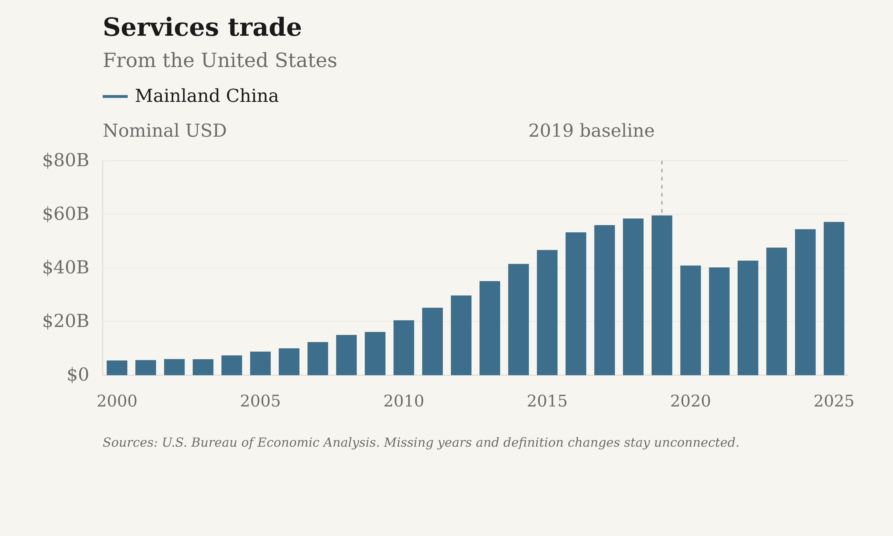
Standalone essay graphics, with titles and sources:
- The Margin of Error: Essay PNG (3000 px wide) · SVG
- Substack: Essay PNG (3000 px wide) · SVG


Hong Kong and Macau
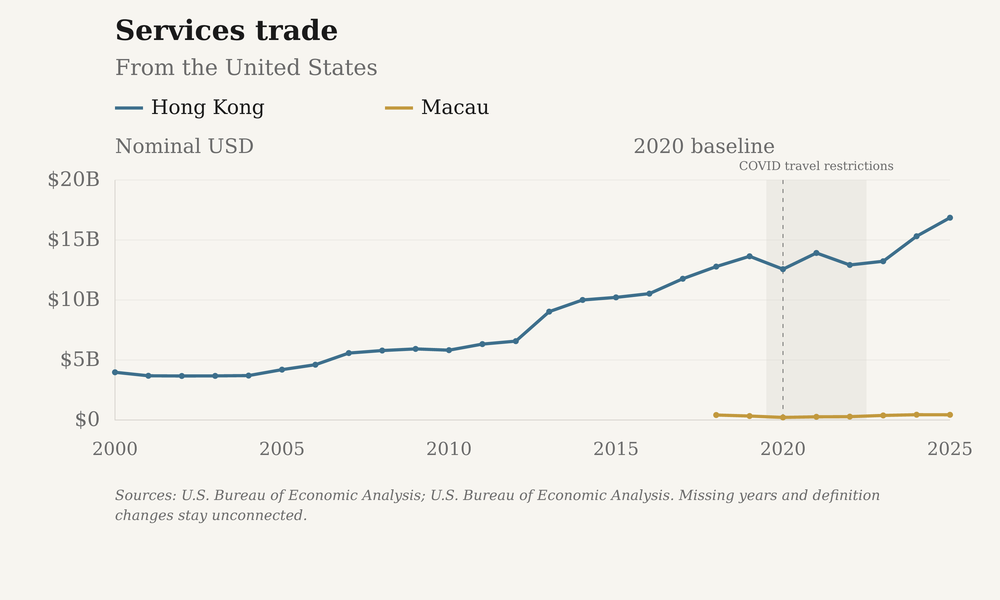
Standalone essay graphics, with titles and sources:
- The Margin of Error: Essay PNG (3000 px wide) · SVG
- Substack: Essay PNG (3000 px wide) · SVG


Logarithmic view — useful when series differ greatly in size
Mainland China
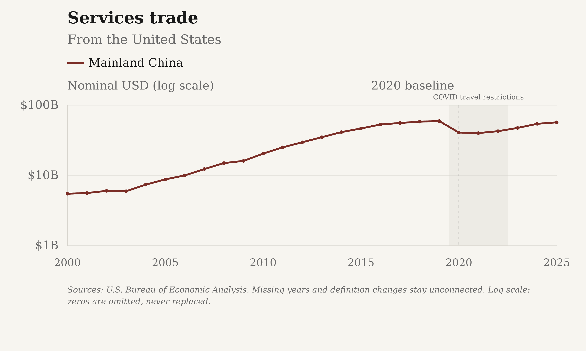
Standalone essay graphics, with titles and sources:
- The Margin of Error: Essay PNG (3000 px wide) · SVG
- Substack: Essay PNG (3000 px wide) · SVG


Hong Kong and Macau
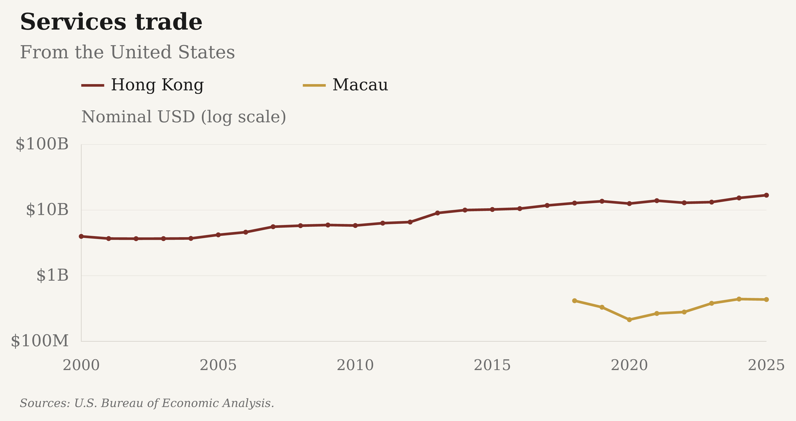
Standalone essay graphics, with titles and sources:
- The Margin of Error: Essay PNG (3000 px wide) · SVG
- Substack: Essay PNG (3000 px wide) · SVG


Exact values, definitions and unavailable series
Mainland China
Source: U.S. Bureau of Economic Analysis · Last updated September 3, 2026. Latest: 2025.
| Period | Value | Status |
|---|---|---|
| 2000 | $5,497,000,000 | observed |
| 2001 | $5,628,000,000 | observed |
| 2002 | $6,039,000,000 | observed |
| 2003 | $5,974,000,000 | observed |
| 2004 | $7,400,000,000 | observed |
| 2005 | $8,805,000,000 | observed |
| 2006 | $10,035,000,000 | observed |
| 2007 | $12,368,000,000 | observed |
| 2008 | $15,026,000,000 | observed |
| 2009 | $16,150,000,000 | observed |
| 2010 | $20,491,000,000 | observed |
| 2011 | $25,170,000,000 | observed |
| 2012 | $29,738,000,000 | observed |
| 2013 | $35,121,000,000 | observed |
| 2014 | $41,519,000,000 | observed |
| 2015 | $46,734,000,000 | observed |
| 2016 | $53,302,000,000 | observed |
| 2017 | $56,010,000,000 | observed |
| 2018 | $58,463,000,000 | observed |
| 2019 | $59,623,000,000 | observed |
| 2020 | $40,931,000,000 | observed |
| 2021 | $40,212,000,000 | observed |
| 2022 | $42,761,000,000 | observed |
| 2023 | $47,610,000,000 | observed |
| 2024 | $54,474,000,000 | observed |
| 2025 | $57,196,000,000 | observed |
Hong Kong
Source: U.S. Bureau of Economic Analysis · Last updated September 3, 2026. Latest: 2025.
| Period | Value | Status |
|---|---|---|
| 2000 | $3,977,000,000 | observed |
| 2001 | $3,685,000,000 | observed |
| 2002 | $3,668,000,000 | observed |
| 2003 | $3,676,000,000 | observed |
| 2004 | $3,702,000,000 | observed |
| 2005 | $4,196,000,000 | observed |
| 2006 | $4,607,000,000 | observed |
| 2007 | $5,578,000,000 | observed |
| 2008 | $5,788,000,000 | observed |
| 2009 | $5,924,000,000 | observed |
| 2010 | $5,819,000,000 | observed |
| 2011 | $6,325,000,000 | observed |
| 2012 | $6,571,000,000 | observed |
| 2013 | $9,030,000,000 | observed |
| 2014 | $10,003,000,000 | observed |
| 2015 | $10,218,000,000 | observed |
| 2016 | $10,530,000,000 | observed |
| 2017 | $11,771,000,000 | observed |
| 2018 | $12,783,000,000 | observed |
| 2019 | $13,643,000,000 | observed |
| 2020 | $12,568,000,000 | observed |
| 2021 | $13,919,000,000 | observed |
| 2022 | $12,919,000,000 | observed |
| 2023 | $13,228,000,000 | observed |
| 2024 | $15,313,000,000 | observed |
| 2025 | $16,857,000,000 | observed |
Macau
Source: U.S. Bureau of Economic Analysis · Release Date: July 7, 2026. Latest: 2025.
| Period | Value | Status |
|---|---|---|
| 2018 | $416,000,000 | observed |
| 2019 | $331,000,000 | observed |
| 2020 | $214,000,000 | observed |
| 2021 | $266,000,000 | observed |
| 2022 | $280,000,000 | observed |
| 2023 | $380,000,000 | observed |
| 2024 | $441,000,000 | observed |
| 2025 | $434,000,000 | observed |